Q1. You are on a busy overnight shift and are handed the following ECG for a patient who was just brought in by ambulance. What is the most likely diagnosis?
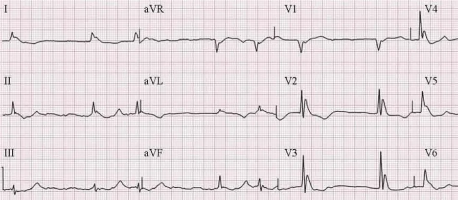
Intraining 2569 Q8 source image
Source file: Intraining exam 100 ข้อ 12 Jan 2026 | Intraining source-preserving stem/options. No official answer key was found in the PDF; keep unanswered until verified. | Review flags: missing_verified_answer_key
Original source image preserved from metal test.pdf p.4. Choices transcribed from the source image; answer/lesson intentionally not imported.
Reference: Source: metal test.pdf | p.4 | image-based source page; answer intentionally not imported.
ซ่อนเฉลยเปิดเฉลยเฉลยA16-0044 answer / rationale
Answer
A. reassure ไม่ต้อง admit
Rationale
Elemental mercury from a broken thermometer is poorly absorbed from the GI tract; reassurance/observation is usually sufficient if no aspiration.
ข้อ 012
Q7. 23. A mechanic was presented with abdominal pain. He has recurrent abdominal pain for 3 months PE: abd soft, generalized tender, no guarding. CBC: basophilic strippling 2+ What is the proper management?
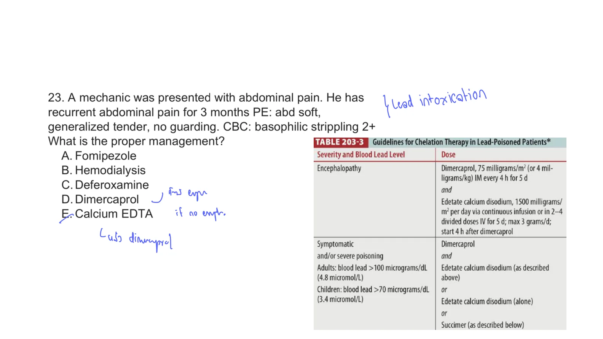
metal test.pdf, p.5
Original source image preserved from metal test.pdf p.5. Choices transcribed from the source image; answer/lesson intentionally not imported.
Reference: Source: metal test.pdf | p.5 | image-based source page; answer intentionally not imported.
ซ่อนเฉลยเปิดเฉลยเฉลยA16-0045 answer / rationale
Answer
E. Calcium EDTA
Rationale
Chronic abdominal pain with basophilic stippling in a mechanic suggests lead poisoning; calcium EDTA is a chelator for significant lead toxicity.
Q1. A 29-year-old man arrives in the Emergency Department after his estranged wife poisoned him with a cyanide-contaminated acetaminophen tablet. What management strategies should be included for this patient's condition?
Intraining exam 100 ข้อ 12 Jan 2026, p.27
Source file: Intraining exam 100 ข้อ 12 Jan 2026 | Intraining source-preserving stem/options. No official answer key was found in the PDF; keep unanswered until verified. | Review flags: missing_verified_answer_key
Benzocaine exposure with cyanosis and low pulse oximetry despite high PaO2 is methemoglobinemia.
พ.ศ. 2568ข้อ 016
Q13. Female 34 yr brought by her parent after suicidal attempt ingestion some drugs. She had nausea and vomiting, AOC 2 hr after ingestion. V/S T 37c P100 BP 149/90 RR20 O2sat 95%. Heart lung normal. Abd mild tender epigastrium. After evaluation she loss of consciousness and found cardiac arrest. EKG sine wave then monomorphic VT (มีรูป) Lab ABG ph 7.4 PCO2 40 PO2 80 lactate 4, elyte K 7.5 What is toxin ?
Source image preserved from Cn H2S test.pdf p.5. No answer/lesson in this collection pass.
Reference: Source: Cn H2S test.pdf | p.5 | full source page rendered; answer intentionally not imported.
ข้อ 031
Q7. What is abnormal finding in CT brain in patient with CO poisoning?
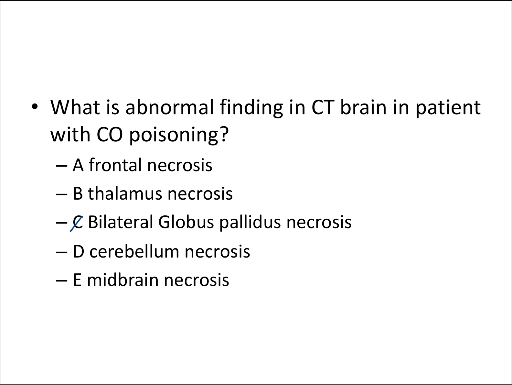
QUIZ CO-CN.pdf, p.2
Source image preserved from QUIZ CO-CN.pdf p.2. No answer/lesson in this collection pass.
Reference: Source: QUIZ CO-CN.pdf | p.2 | full source page rendered; answer intentionally not imported.
ข้อ 032
Q8. What is substance can not cause methemoglobinemia ?
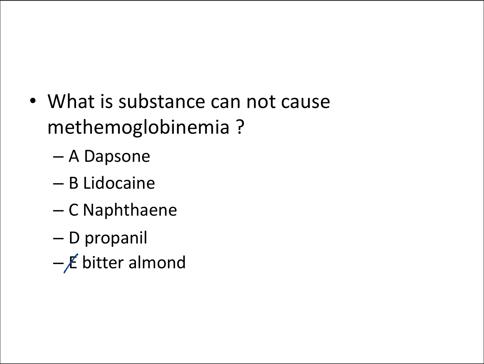
QUIZ CO-CN.pdf, p.4
Source image preserved from QUIZ CO-CN.pdf p.4. No answer/lesson in this collection pass.
Reference: Source: QUIZ CO-CN.pdf | p.4 | full source page rendered; answer intentionally not imported.
ข้อ 033
Q9. ผู้ป่วย methemoglobinemia ให้ methylene blue ไป แล้วอาการไม่ดีขึ7นนึกถึงภาวะต่อไปนี7 ยกเว้นข้อใด
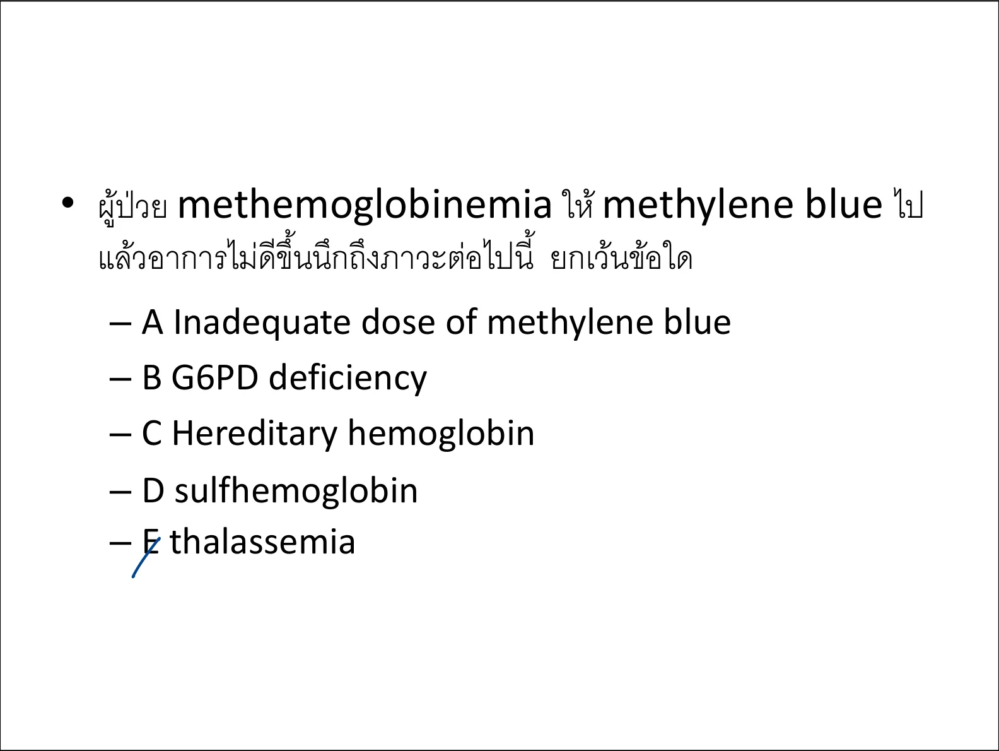
QUIZ CO-CN.pdf, p.5
Source image preserved from QUIZ CO-CN.pdf p.5. No answer/lesson in this collection pass.
Reference: Source: QUIZ CO-CN.pdf | p.5 | full source page rendered; answer intentionally not imported.
ข้อ 034
Q10. ผู้ป่วยติดอยู่ในอาคารไฟไหม้ มีอาการสําลักควัน สงสัย CO with CN poisoning >> what is appropriate management?
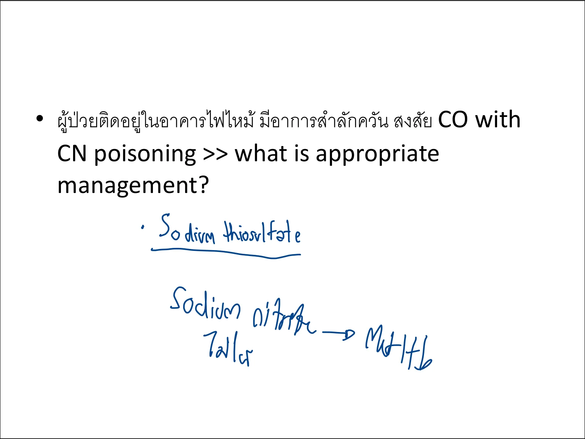
QUIZ CO-CN.pdf, p.6
Source image preserved from QUIZ CO-CN.pdf p.6. No answer/lesson in this collection pass.
Reference: Source: QUIZ CO-CN.pdf | p.6 | full source page rendered; answer intentionally not imported.
ซ่อนเฉลยเปิดเฉลยเฉลยA16-0112 answer / rationale
Answer
Sodium thiosulfate
Rationale
The reviewed source image for QUIZ CO-CN.pdf page 6 shows suspected CO plus cyanide smoke inhalation and has a handwritten source-side answer of sodium thiosulfate.
ข้อ 035
Q11. CO poisoning ถาม O2sat ปลายนิ7วเทียบกับ ABG
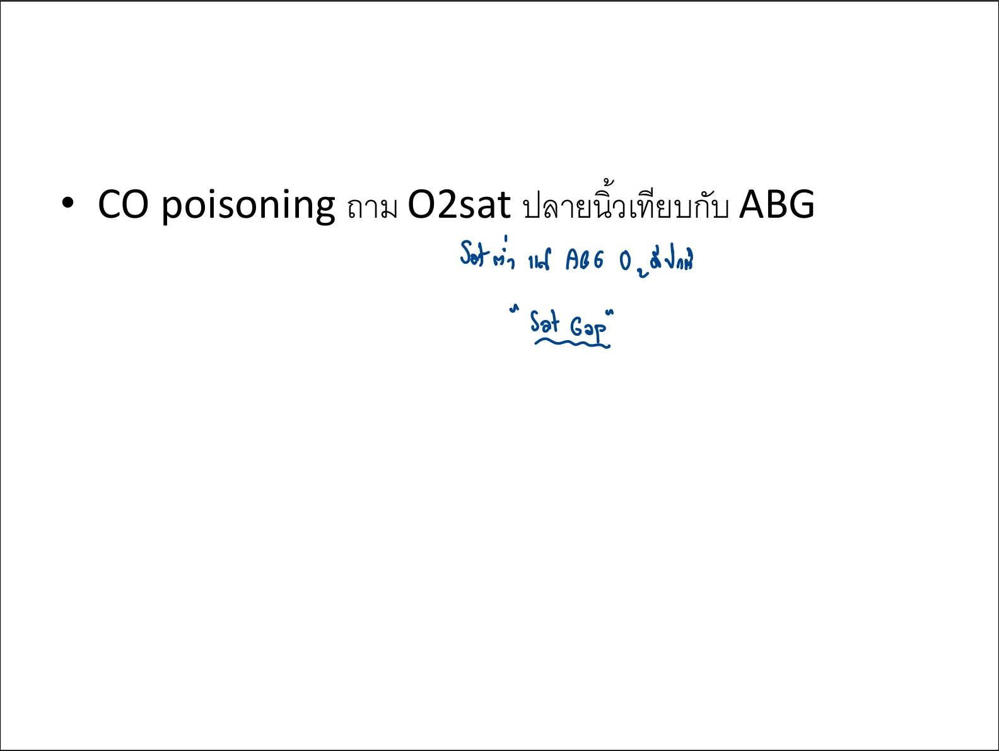
QUIZ CO-CN.pdf, p.7
Source image preserved from QUIZ CO-CN.pdf p.7. No answer/lesson in this collection pass.
Reference: Source: QUIZ CO-CN.pdf | p.7 | full source page rendered; answer intentionally not imported.
ข้อ 036
Q12. H2S poisoning management
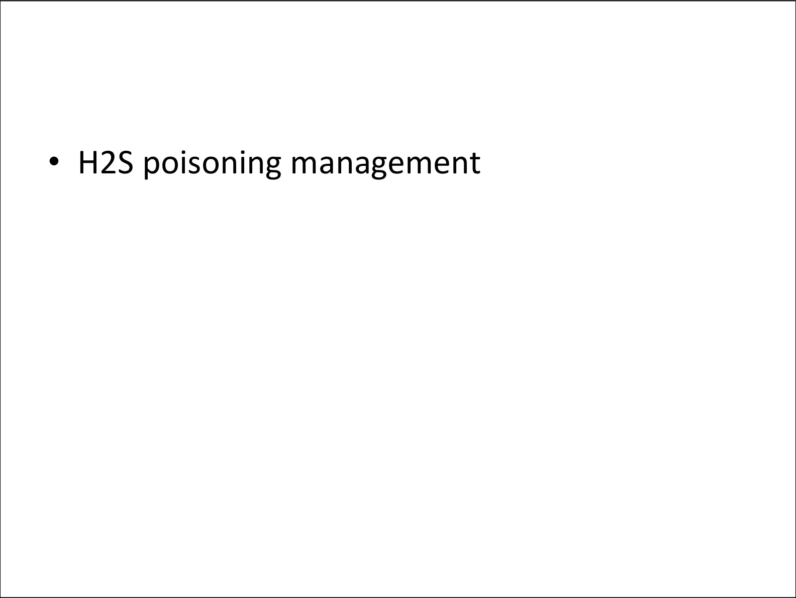
QUIZ CO-CN.pdf, p.8
Source image preserved from QUIZ CO-CN.pdf p.8. No answer/lesson in this collection pass.
Reference: Source: QUIZ CO-CN.pdf | p.8 | full source page rendered; answer intentionally not imported.
Q1. A 40-year-old woman came to the ER, presenting with syncope after taking an unspecified number of pills three hours ago. Her husband reported that she had taken 30 tabs of digoxin prior to this. Her heart rate is 30 bpm, BP 80/60 mmHg, RR 20/min, SpO2 96%. After initial management with Atropine IV, the heart rate remained of 30 bpm. Which of the following is the most appropriate management in this patient?
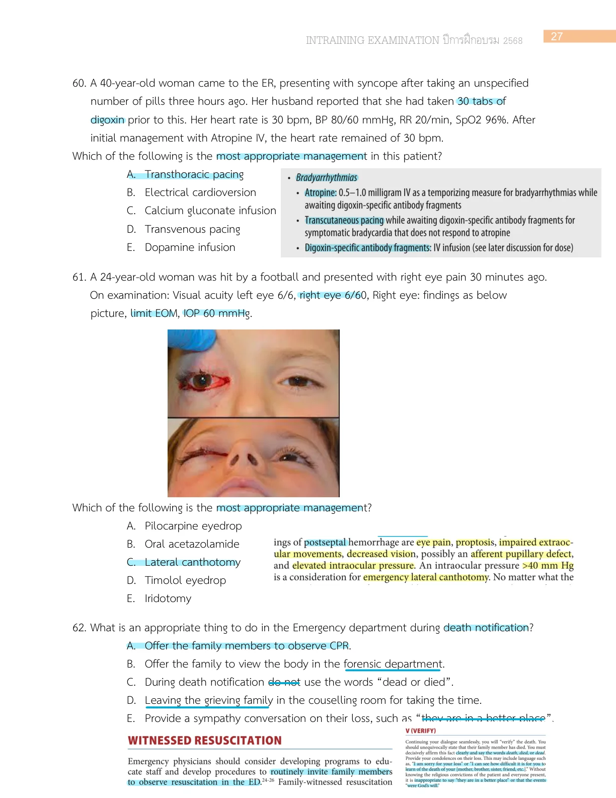
Intraining exam 100 ข้อ 12 Jan 2026, p.28
Source file: Intraining exam 100 ข้อ 12 Jan 2026 | Intraining source-preserving stem/options. No official answer key was found in the PDF; keep unanswered until verified. | Review flags: missing_verified_answer_key
Q23. 112. The police sent male 35 yr, who ingested a portion of cocaine pocket, he is agitate, T 37 PR 160/min, BP 160/100, abdomen soft non tenderness, neuro E4V5M6, EKG as below, what appropriate management
MCQ-202024.pdf.pdf, p.16
Source image preserved from MCQ-202024.pdf.pdf p.16. No answer/lesson in this collection pass.
Reference: Source: MCQ-202024.pdf.pdf | p.16 | full source page rendered; answer intentionally not imported.
ซ่อนเฉลยเปิดเฉลยเฉลยA16-0100 answer / rationale
Answer
D. sodium bicarbonate
Rationale
Cocaine packet ingestion with agitation, marked tachycardia, and a concerning ECG can reflect sodium-channel blockade/wide-complex toxicity. Sodium bicarbonate is the appropriate treatment among the options; AV nodal blockers are not appropriate.
พ.ศ. 2566ข้อ 040
Q2. ชายอายุ 30 ปี U/D epilepsy start ยามา 2 ปี ไม่ทราบชนิดยา วันนี้ภรรยาพามาบอกว่าชักเกร็ง few mins V/S BP 170/110 , BT 38 C, PR 110 , RR 20 , SpO2 100% PE >> anhydrosis, dry mucosa, full bladder, hypoactive bs, pupil 5 mm SRTLBE, motor grade 4 all, Urine TCA positive , ถามว่า ยากันชักกินตัวไหนอยู่
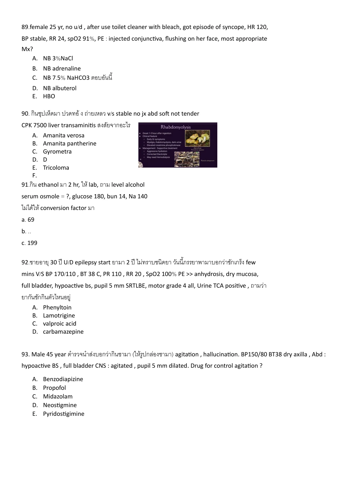
MCQ 2566 combined.pdf, p.15
Source file: MCQ 2566 combined.pdf | Mx?
Reference: Source: MCQ 2566 combined.pdf | p.15
ซ่อนเฉลยเปิดเฉลยเฉลยA16-0133 answer / rationale
Answer
D. Carbamazepine
Rationale
Carbamazepine can cause TCA-positive screen and anticholinergic sodium-channel toxicity.
ข้อ 041
Q6. A 44-year-old man with drug abuse presents with acute chest pain. His EKG is shown below. During evaluation, the patient develops intermittent run of VT. What is the best pharmacological therapy for this patient?
Substance test-1.pdf, p.1
Source file: Substance test-1.pdf | Targeted repair from Substance test-1.pdf. No explicit answer key was present in the source.
Reference: Source: Substance test-1.pdf | p.1-8
ซ่อนเฉลยเปิดเฉลยเฉลยA16-0075 answer / rationale
Answer
4. Bicarbonate
Rationale
Cocaine and related sodium-channel blockade with ventricular dysrhythmia is treated with sodium bicarbonate.
Q39. ผู้ป่วย MDD on amitriptyline present with palpitation BT 39 PR 120 RR 24 BP 125/78 sat 98% RA. EKG shown. What is the most proper management?
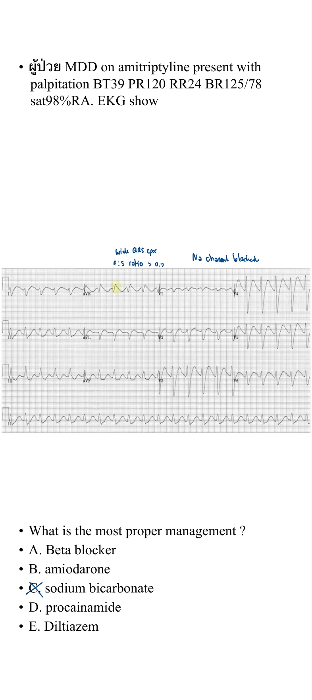
TEST.pdf, p.4-5-6
Source image preserved from TEST.pdf p.4-5-6. No answer/lesson in this collection pass.
Reference: Source: TEST.pdf | p.4-5-6 | full source page rendered; answer intentionally not imported.
ซ่อนเฉลยเปิดเฉลยเฉลยA16-0058 answer / rationale
Answer
C. sodium bicarbonate
Rationale
TCA toxicity with dysrhythmia/wide-complex ECG is treated with sodium bicarbonate.
ข้อ 045A16-0117A16-Q0117solution_ready
18. 50 year old presented with AOC, seizure. At ER stop seizure. EKG: tall r avr, wide qrs complex (ให้รูป EKG มา). What is the best next step in management?
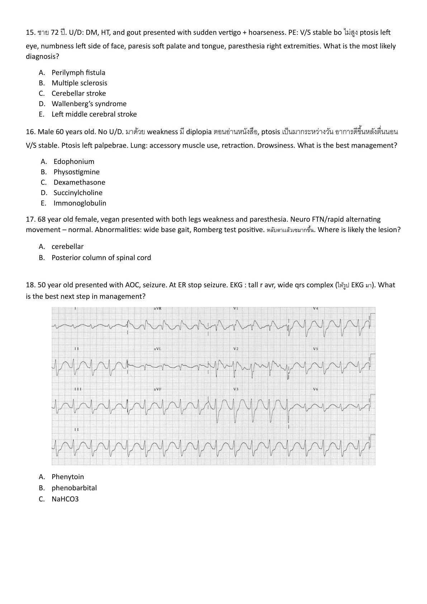
crop
ยังไม่ถูก
A. Phenytoin
ยังไม่ถูก
B. phenobarbital
ถูกต้อง
Seizure plus wide QRS and tall R in aVR indicates sodium-channel blocker/TCA toxicity. Sodium bicarbonate is the treatment.
Q1. A 25-year-old woman was brought to the Emergency Department by her husband. She has major depressive disorder. Her husband did not know what had happened. He told you that she was at a party, and someone let her eat something. After that, she became drowsy. Her laboratory shown: Na 140, K 5.3, Cl 105, HCO3 23, BS 90. Measure serum osmolarity = 310 mOsm/kg. What is the most likely toxication in this patient?
Intraining exam 100 ข้อ 12 Jan 2026, p.29
Source file: Intraining exam 100 ข้อ 12 Jan 2026 | Intraining source-preserving stem/options. No official answer key was found in the PDF; keep unanswered until verified. | Review flags: missing_verified_answer_key
Q2. A 45-year-old male is brought to the emergency department after being found unresponsive at home. The history provided by his wife indicates that he ingested a large amount of a floor cleaning solution about 30 minutes prior to ED. Upon arrival, the patient has a weak pulse, his blood pressure is 80/50 mmHg, and he has a stridor. The patient's skin appears flushed, and the lab findings show an elevated anion gap metabolic acidosis. Which of the following clinical signs is most critical to monitor closely in this patient?
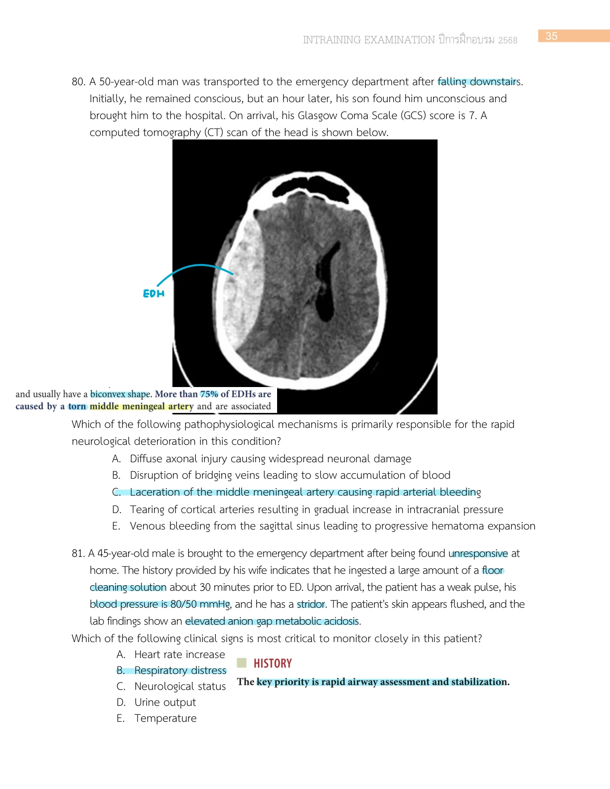
Intraining exam 100 ข้อ 12 Jan 2026, p.36
Source file: Intraining exam 100 ข้อ 12 Jan 2026 | Intraining source-preserving stem/options. No official answer key was found in the PDF; keep unanswered until verified. | Review flags: missing_verified_answer_key
Q3. A 23-year-old man was brought to the Emergency Department (ED), in view of multiple episodes of vomiting, abdominal pain and feeling generally unwell. Symptoms began 14 hours after ingestion of self-prepared “leaf” tea (100mL). This was ingested to relieve the generalised pain caused by construction work, as part of a ritual. On assessment, the patient was alert but pale, lethargic and diaphoretic. Chest examination revealed normal vesicular breath sounds and normal percussion notes. The patient had a blood pressure of 101/60mmHg, with a heart rate of 37 bpm. Other parameters were within normal limits. ECG revealed as a picture. What is the mechanism of action of this tea ?
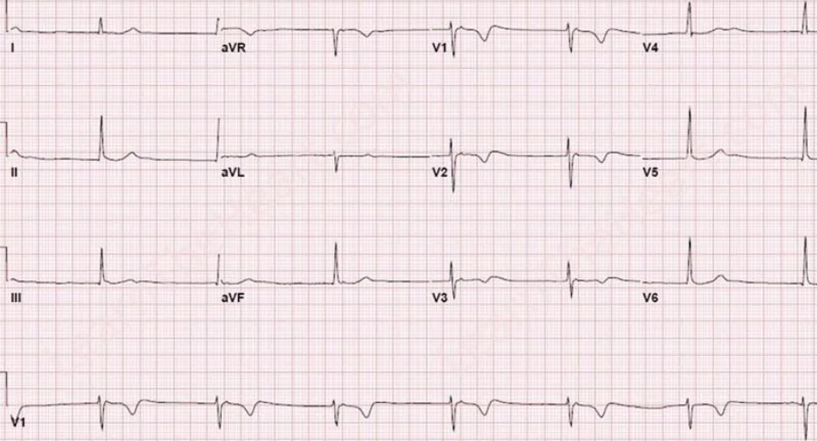
Intraining 2569 Q82 source image
Source file: Intraining exam 100 ข้อ 12 Jan 2026 | Intraining source-preserving stem/options. No official answer key was found in the PDF; keep unanswered until verified. | Review flags: missing_verified_answer_key
Q4. A 4-year-old healthy female presents to the emergency department with complaints of nausea, vomiting, ringing in the ears, and lethargy. She was reportedly playing in the living room while her parents were in the kitchen. About 3 hours ago, her mother found her with an opened empty bottle of oil of wintergreen or a liniment nearby. Her mother mentioned that she had not realized how much oil was missing until now. Vital Signs: BT 37°C, PR 120 bpm, RR 24 breaths/min, BP 100/70 mmHg, oxygen saturation 97% room air. The child appears lethargic but is arousable. Tinnitus was noted. Others were normal. Her initial point of care glucose was 80 mg. What is the initial treatment for this patient?
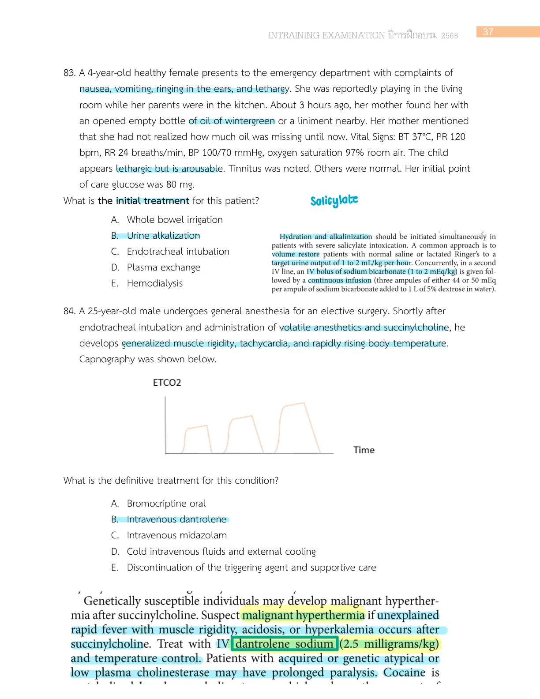
Intraining exam 100 ข้อ 12 Jan 2026, p.38
Source file: Intraining exam 100 ข้อ 12 Jan 2026 | Intraining source-preserving stem/options. No official answer key was found in the PDF; keep unanswered until verified. | Review flags: missing_verified_answer_key
Q5. A 25-year-old male undergoes general anesthesia for an elective surgery. Shortly after endotracheal intubation and administration of volatile anesthetics and succinylcholine, he develops generalized muscle rigidity, tachycardia, and rapidly rising body temperature. Capnography was shown below. What is the definitive treatment for this condition?
Intraining exam 100 ข้อ 12 Jan 2026, p.38
Source file: Intraining exam 100 ข้อ 12 Jan 2026 | Intraining source-preserving stem/options. No official answer key was found in the PDF; keep unanswered until verified. | Review flags: missing_verified_answer_key
Q37. 11. Female 34 yr brought by her parent after suicidal attempt ingestion some drugs. She had nausea and vomiting, AOC 2 hr after ingestion. V/S T 37c P100 BP 149/90 RR20 O2sat 95%. Heart lung normal. Abd mild tender epigastrium. After evaluation she loss of consciousness and found cardiac arrest. EKG sine wave then monomorphic VT (มีรูป) Lab ABG pH 7.4 PCO2 40 PO2 80 lactate 4, electrolyte K 7.5 What is toxin?
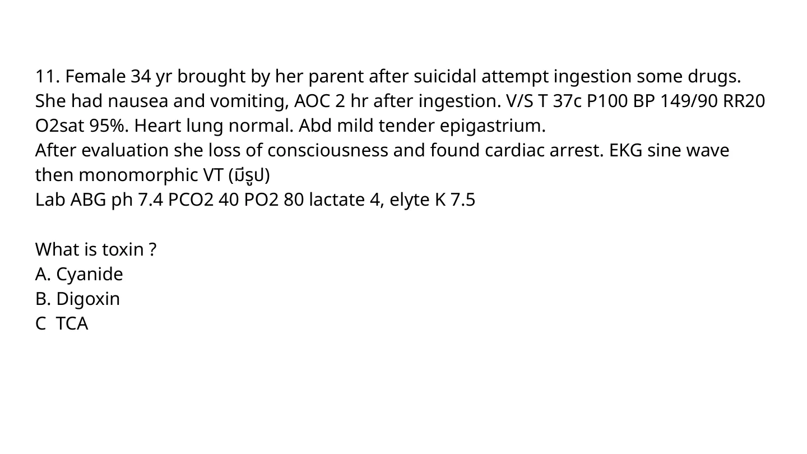
MCQ 2025 รวมไม่แยกหัวข้อ.pdf, p.9
Source image preserved from MCQ 2025 รวมไม่แยกหัวข้อ.pdf p.9. No answer/lesson in this collection pass.
Reference: Source: MCQ 2025 รวมไม่แยกหัวข้อ.pdf | p.9 | full source page rendered; answer intentionally not imported.
พ.ศ. 2567ข้อ 052
Q18. yo alcoholic poor compliant bipolar 1 day his wife reported he was agitate and confuse PE HR 120 T37 BP 150/50 Orientate only to self, poor insight, tremulous Dx?
MCQ-202024.pdf.pdf, p.1
Source file: MCQ-202024.pdf.pdf
Reference: Source: MCQ-202024.pdf.pdf | p.1-20
พ.ศ. 2567ข้อ 053A16-0050A16-Q0050solution_ready
36. เด็ก 2 ขวบ มาด้วยหายใจเหนื่อย 1 d Look non toxic Film prevertebral soft tissue swelling Dx?
crop
ถูกต้อง
Toddler with respiratory distress and prevertebral soft-tissue swelling fits retropharyngeal abscess.
75 Years Dizziness V/S stable NO hepatomegaly. CBC Hb 4 hct 16 MCV 70 RDW กว้าง
crop
ยังไม่ถูก
A. Folate level
ยังไม่ถูก
B. Hb
ถูกต้อง
Severe microcytic anemia with high RDW in an elderly patient is most suspicious for iron deficiency anemia until proven otherwise. The best next investigation among the choices is iron study.
Severe microcytic anemia with high RDW in an elderly patient is most suspicious for iron deficiency anemia until proven otherwise. The best next investigation among the choices is iron study.
Bloody diarrhea followed by seizure/encephalopathy, anemia, thrombocytopenia, elevated creatinine, and hematuria is the classic triad/pattern of hemolytic uremic syndrome, often after Shiga-toxin producing E. coli infection.
Bloody diarrhea followed by seizure/encephalopathy, anemia, thrombocytopenia, elevated creatinine, and hematuria is the classic triad/pattern of hemolytic uremic syndrome, often after Shiga-toxin producing E. coli infection.
ข้อ 070A16-0080A16-Q0080solution_ready
After using LOVE drug, patient has confusion and hallucination; asks the mechanism of action.
Tampon-associated toxic shock syndrome needs broad severe-sepsis coverage plus toxin suppression. Among the reviewed choices, the clindamycin-containing broad regimen is the best match.
ยังไม่ถูก
D. vancomycin
Source: ข้อสอบ R2ชารีฟ/Copy of CPR one night miracle.pdf | Page/slot: 135 | Marker: question/source page
Reference: Source: ข้อสอบ R2ชารีฟ/Copy of CPR one night miracle.pdf | Page/slot: 135 | Marker: question/source page
ซ่อนเฉลยเปิดเฉลยเฉลยA16-0110 answer
Answer
C. Meropenem plus clindamycin
Rationale
Tampon-associated toxic shock syndrome needs broad severe-sepsis coverage plus toxin suppression. Among the reviewed choices, the clindamycin-containing broad regimen is the best match.
ข้อ 078A16-0127A16-Q0127solution_ready
หลังกินข้าวผัด + ส้มตำ อ้วกแตกปวดท้องทันที ไม่มีท้องเสีย V/S stable ถาม organism ที่เป็นไปได้ A. strep group A B. S. aureus C. Salmonella
Serotonin syndrome with hyperreflexia/clonus is treated with supportive care, benzodiazepines, and cyproheptadine; the antidotal option is cyproheptadine.
Opioid withdrawal with vomiting/diarrhea after heroin cessation is treated with opioid agonist therapy when available; methadone is the listed agonist.
Opioid withdrawal with vomiting/diarrhea after heroin cessation is treated with opioid agonist therapy when available; methadone is the listed agonist.
พ.ศ. 2567ข้อ 083
Q24. 172. Male 32 yo, stop using heroine; N/V, diarrhea, fever, tachycardia, pupil 4 mm, diaphoresis, agitate; Q - proper management?
MCQ-202024.pdf.pdf, p.19
Source image preserved from MCQ-202024.pdf.pdf p.19. No answer/lesson in this collection pass.
Reference: Source: MCQ-202024.pdf.pdf | p.19 | full source page rendered; answer intentionally not imported.
ซ่อนเฉลยเปิดเฉลยเฉลยA16-0111 answer / rationale
Answer
B. Methadone
Rationale
Opioid withdrawal with GI symptoms, diaphoresis, mydriasis, and agitation can be treated with opioid agonist therapy such as methadone.
พ.ศ. 2566ข้อ 084
Q1. Male 27 Y/O presented with extremely agitation and chest pain. He state that he snorting Cocaine all after afternoon. His V/S BT 38 C PR 112 BP 215/130 SpO2 96% PE WNL CXR normal EKG ainus tachycardia rate 116 bpm. What is most appropriate Mx?
Q8. Male 45 year ต ารวจน าส่งบอกว่ากินชามา (ให้รูปกล่องชามา) agitation , hallucination. BP150/80 BT38 dry axilla , Abd : hypoactive BS , full bladder CNS : agitated , pupil 5 mm dilated. Drug for control agitation ?
MCQ 2566 combined.pdf, p.15
Source file: MCQ 2566 combined.pdf | Mx?
Reference: Source: MCQ 2566 combined.pdf | p.15
ซ่อนเฉลยเปิดเฉลยเฉลยA16-0049 answer / rationale
Answer
A. Benzodiazepine
Rationale
Anticholinergic agitation is initially controlled with benzodiazepines and supportive care.
Source image preserved from รวมข้อสอบ-board-2562-CHULA.pdf p.36. No answer/lesson in this collection pass.
Reference: Source: รวมข้อสอบ-board-2562-CHULA.pdf | p.36 | full source page rendered; answer intentionally not imported.
ซ่อนเฉลยเปิดเฉลยเฉลยA16-0005 answer / rationale
Answer
A. Wernicke encephalopathy
Rationale
Confusion, ataxia, nystagmus, and diplopia in chronic alcohol use are the Wernicke encephalopathy triad.
ข้อ 090A16-0122A16-Q0122solution_ready
หญิง 22 ปี G1P0 GA 12 weeks มาด้วย seizure, U/D epilepsy Dx ตอนอายุ 14 ปี บนรถ ems ได้ diazepam หยุดชัก จากนั้นไม่ gain concious + มีชักซ้ำ, V/S stable, BP 120/90 mmHg ถาม most appropriated mx
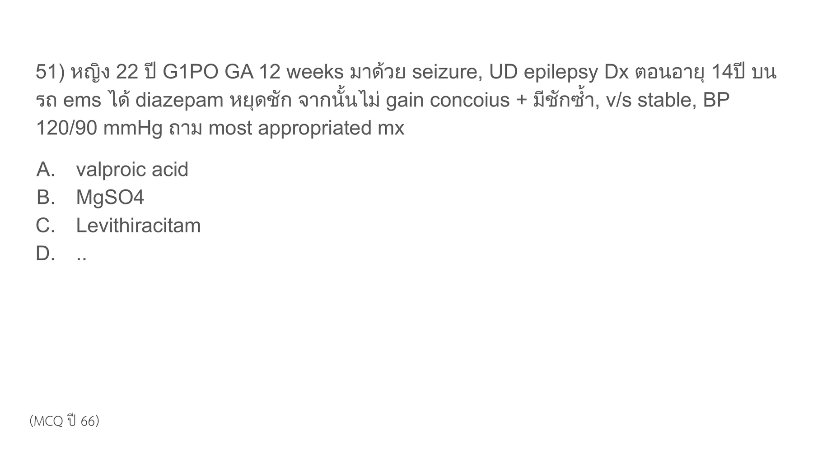
crop
ยังไม่ถูก
A. valproic acid
ยังไม่ถูก
B. MgSO4
ถูกต้อง
At 12 weeks with known epilepsy, normal BP, and recurrent seizure after benzodiazepine, this is not typical eclampsia. Levetiracetam is the best listed antiseizure medication in pregnancy; valproate is avoided when possible because of fetal risk.
At 12 weeks with known epilepsy, normal BP, and recurrent seizure after benzodiazepine, this is not typical eclampsia. Levetiracetam is the best listed antiseizure medication in pregnancy; valproate is avoided when possible because of fetal risk.
After adequate benzodiazepine treatment has failed, the next phase is second-line antiseizure loading, commonly fosphenytoin/phenytoin, levetiracetam, valproate, or phenobarbital depending on context. In this option set, Dilantin is the appropriate second-line choice.
After adequate benzodiazepine treatment has failed, the next phase is second-line antiseizure loading, commonly fosphenytoin/phenytoin, levetiracetam, valproate, or phenobarbital depending on context. In this option set, Dilantin is the appropriate second-line choice.
After diazepam/benzodiazepine does not stop convulsive status epilepticus, move to second-line loading therapy. The source crop for this row shows phenytoin/fosphenytoin as the intended second-line answer; guideline-consistent modern wording is fosphenytoin or phenytoin loading.
Two doses of diazepam/Valium have failed, so do not keep escalating benzodiazepine. The next step is second-line antiseizure loading. In this older option set, phenytoin is the intended equivalent of modern fosphenytoin/phenytoin loading.
Two doses of diazepam/Valium have failed, so do not keep escalating benzodiazepine. The next step is second-line antiseizure loading. In this older option set, phenytoin is the intended equivalent of modern fosphenytoin/phenytoin loading.
ข้อ 094A16-0105A16-Q0105solution_ready
เด็กชัก paramedic ให้ diazepam ทางก้นมา 2 ครั้งแล้วไม่หยุด ที่ ER ให้อะไรต่อ iv lorazepam iv phenytoin iv fosphenytoin iv phenobarbital
The child already received two rectal diazepam doses before arrival. In this older Thai option set, IV phenytoin is the expected second-line loading medication after benzodiazepine failure. Modern alternatives include fosphenytoin, levetiracetam, and valproate depending on protocol.
ข้อ 095
Q3. Duration of action of naloxone in opioid overdose reversal
opioid.pdf, p.1
Source file: opioid.pdf
Reference: Source: opioid.pdf | p.1-3
ซ่อนเฉลยเปิดเฉลยเฉลยA16-0064 answer / rationale
Answer
Provisional: A. 30 min
Rationale
Naloxone duration is commonly about 30-90 minutes; the closest short option may be 30 minutes, but exact teaching-key wording varies.
Naloxone infusion is commonly started at about two-thirds of the effective wake-up dose per hour: 2/3 x 0.8 mg ≈ 0.5 mg/hr.
ข้อ 097
Q17. breathing. v/s: BP 115/70, HR 99, BT36’c, RR 3 /min, O2 sat 87% on room air You notice fresh needle marks and miotic pupils. You begin bag-valve-mask ventilation and his oxygen saturation increases to 99%. Which of the following is the most appropriate next step in management? ⑬
opioid.pdf, p.1
Source image preserved from opioid.pdf p.1. No answer/lesson in this collection pass.
Reference: Source: opioid.pdf | p.1 | full source page rendered; answer intentionally not imported.
ซ่อนเฉลยเปิดเฉลยเฉลยA16-0063 answer / rationale
Answer
B. Administration of naloxone
Rationale
After assisted ventilation improves oxygenation in opioid toxidrome, give naloxone to reverse respiratory depression.
ข้อ 098
Q25. A 25 yo man is carried into the ED by two of his friends who state that he is not breathing. V/S: BP 115/70, HR 99, BT 36 C, RR 3/min, O2 sat 87% on room air. You notice fresh needle marks and miotic pupils. You begin bag-valve-mask ventilation and his oxygen saturation increases to 99%. Which of the following is the most appropriate next step in management?
opioid.pdf, p.1
Source image preserved from opioid.pdf p.1. No answer/lesson in this collection pass.
Reference: Source: opioid.pdf | p.1 | full source page rendered; answer intentionally not imported.
ข้อ 099
Q18. 11. Duration of action of naloxone in opioid overdose reversal a. 30 min b. 1 hr c. 2 hr 9.Opioidoverdoseห"ก80kgใ%naloxone0.4mgไ'(น,ใ%naloxone0.8(นถามmanagement a. Naloxone drip 0.5mg/hr b. Naloxone drip 0.8mg/hr c.Observe-าแ/bolusnaloxone0.8mg ⑳ close drip = 0.8x1 = 0.533 mybo ⑰
opioid.pdf, p.2
Source image preserved from opioid.pdf p.2. No answer/lesson in this collection pass.
Reference: Source: opioid.pdf | p.2 | full source page rendered; answer intentionally not imported.
Initial EMS management of opioid respiratory failure is airway opening and assisted ventilation before/with naloxone.
ข้อ 102A16-0134A16-Q0134solution_ready
25 yo female was found AOC. Advance team ไปรับ พบว่า v/s BT 37, HR 60, BP 90/50, RR 6, Sat 90% RA. What is appropriate next step?\nA. Intubation\nB. Give naloxone + ไปโรงพยาบาล\nC. Assist bag-valve-mask\nD. .\nE. Oxygen 10 LPM with non
Altered consciousness with RR 6 and hypoxemia is primarily a ventilation problem. Assist ventilation with BVM is the immediate next step before relying on oxygen alone or delayed antidote effect.
ข้อ 103A16-0114A16-Q0114solution_ready
9. เด็กชัก paramedic ให้ diazepam ทางก้นมา 2 ครั้งแล้วไม่หยุด ที่ ER
a. iv lorazepam b. iv phenytoin c. iv fosphenytoin d. iv phenobarbital
The source crop marks `c. IV fosphenytoin`. The child has persistent seizure after two rectal diazepam doses, so this has moved past the initial benzodiazepine step to second-line antiseizure loading with fosphenytoin/phenytoin.
Source file: Substance test-1.pdf | Targeted repair from OCR-corrupt Substance test-1.pdf. No explicit answer key was present in the source.
Reference: Source: Substance test-1.pdf | p.1-8
ข้อ 106
Q10. SHOWN BELOW. DURING EVALUATION, THE PATIENT DEVELOPS INTERMITTENT RUN OF VT . WHAT IS THE BEST PHARMACOLOGICAL THERAPY OF THIS PATIENT
Substance test-1.pdf, p.2
Source image preserved from Substance test-1.pdf p.2. No answer/lesson in this collection pass.
Reference: Source: Substance test-1.pdf | p.2 | full source page rendered; answer intentionally not imported.
ข้อ 107
Q28. A 44 yrs old man with drug abused present with acute chest pain. His EKG is shown below. During evaluation, the patient develops intermittent run of VT. What is the best pharmacological therapy of this patient?
Substance test-1.pdf, p.2
Source image preserved from Substance test-1.pdf p.2. No answer/lesson in this collection pass.
Reference: Source: Substance test-1.pdf | p.2 | full source page rendered; answer intentionally not imported.
Source image preserved from Substance test-1.pdf p.3. No answer/lesson in this collection pass.
Reference: Source: Substance test-1.pdf | p.3 | full source page rendered; answer intentionally not imported.
ข้อ 109A16-0077A16-Q0077solution_ready
16-year-old male returns from nightlife with behavior change, not himself. History includes depression, illicit use, and prescribed venlafaxine; has repetitive speech/looking at things, crying, fear, pupils 5 mm and reactive; asks what substance he took.
Source image preserved from Substance test-1.pdf p.4. No answer/lesson in this collection pass.
Reference: Source: Substance test-1.pdf | p.4 | full source page rendered; answer intentionally not imported.
ข้อ 112A16-0078A16-Q0078solution_ready
2-year-old child rummages through mother's table and eats an unknown substance; mother finds lethargy, ataxic gait, BP drop, RR 30, HR 130; asks what substance is suspected.
Agitation, hyperthermia, mydriasis, and severe hyponatremia point to MDMA.
ข้อ 118
Q34. คนไข้เสพยามา มีอาการสับสน เอะอะโวยวาย BT 39, pupil 5 mm, DTX 90, Na 121, K 4.0, Cl 110, CO2 20 สารที่ใช้มาน่าจะเป็นอะไร
Substance test-1.pdf, p.8
Source image preserved from Substance test-1.pdf p.8. No answer/lesson in this collection pass.
Reference: Source: Substance test-1.pdf | p.8 | full source page rendered; answer intentionally not imported.
ข้อ 119A16-0106A16-Q0106solution_ready
70. A 60-year-old nursing home resident presents with altered mental status, showing lucid intervals alternating with disorientation. Vitals: T 38.2°C, RR 22, BP 100/60 mmHg. She has suprapubic tenderness, pulls at her IV lines, and has a capillary refill <2 sec. Labs show WBC 14,000/mm3 and creatinine 3.7 mg/dL. UA: 20-30 WBC/hpf, nitrite positive. What is the most appropriate initial pharmacologic sedation?
crop
ยังไม่ถูก
A. Diazepam 5 mg IV
ยังไม่ถูก
B. Haloperidol 5 mg IV
ยังไม่ถูก
C. Lorazepam 2 mg PO
ถูกต้อง
This is delirium from infection/medical illness in an older adult. Treat the cause and use medication only if agitation risks harm or prevents care. Avoid benzodiazepines unless alcohol/benzodiazepine withdrawal. If medication is needed, choose the lowest effective antipsychotic dose; among the choices, haloperidol 1 mg PO is safer than haloperidol 5 mg IV or benzodiazepines.
This is delirium from infection/medical illness in an older adult. Treat the cause and use medication only if agitation risks harm or prevents care. Avoid benzodiazepines unless alcohol/benzodiazepine withdrawal. If medication is needed, choose the lowest effective antipsychotic dose; among the choices, haloperidol 1 mg PO is safer than haloperidol 5 mg IV or benzodiazepines.
ข้อ 120A16-0136A16-Q0136solution_ready
51. หญิง 22 ปี G1P0 GA 12 weeks มาด้วย seizure , UD epilepsy Dx ตอนอายุ 14 ปี บนรถ ems ได้ diazepam หยุดชัก จากนั้นไม่ gain concious + มีชักซ้ำ , v/s stable , BP 120/90 mmHg ถาม most appropriated mx
crop
ยังไม่ถูก
A. valproic acid
ยังไม่ถูก
B. MgSO4
ถูกต้อง
Pregnant patient with known epilepsy and recurrent seizure after benzodiazepine should receive an antiseizure loading drug safer in pregnancy; levetiracetam is preferred over valproate.
Pregnant patient with known epilepsy and recurrent seizure after benzodiazepine should receive an antiseizure loading drug safer in pregnancy; levetiracetam is preferred over valproate.
Q30. 17. A 30 year-old-man was bitten by his snake at his right index 1 hour ago. He has only two small puncture wounds with no active bleeding at his index. He does not have any muscle weakness or other symptoms. His snake picture is shown. What is the most appropriate management?
Intraining exam 100 ข้อ 12 Jan 2026.pdf, p.11
Source image preserved from Intraining exam 100 ข้อ 12 Jan 2026.pdf p.11. No answer/lesson in this collection pass.
Reference: Source: Intraining exam 100 ข้อ 12 Jan 2026.pdf | p.11 | full source page rendered; answer intentionally not imported.
พ.ศ. 2569ข้อ 122
Q26. A 16-year-old male with a history of bipolar disorder presents via EMS with confusion, nausea, vomiting, and ataxia noted this morning by his mother. His vital signs include: T 36.9° C, HR 100, BP 110/70, and SaO2 96% on room air. On physical exam, you note the patient to have a resting tremor with myoclonus. Which toxin do you suspect is causing his condition?
Intraining exam 100 ข้อ 12 Jan 2026, p.27
Potential A16/toxicology item originally routed to A05. Full source page preserved; no answer/lesson in this pass.
Reference: Source: Intraining exam 100 ข้อ 12 Jan 2026 | p.27 | originally routed as A05; answer intentionally not imported.
พ.ศ. 2568ข้อ 123
Q3. Female, BW 50 kg Try to commite suicide by ingesting Lithium carbonate 300 mg (1 tab = 8.12 mEq Li+), The bottle consist of 60 tabs but her father state that there are only 40 tabs left in the bottle, She present at ER 3 hrs after ingestion Calculate the peak plasma level, bioavailability 100% (There is no Vd given)
Source image preserved from MCQ-202024.pdf.pdf p.16. No answer/lesson in this collection pass.
Reference: Source: MCQ-202024.pdf.pdf | p.16 | full source page rendered; answer intentionally not imported.
พ.ศ. 2567ข้อ 126A16-0123A16-Q0123solution_ready
33 year female, breast feeding, present with acute breast pain 1 h, T 38.5, PE: left breast: redness, swelling, tenderness, US breast as figure What is the most appropriate management?
crop
ยังไม่ถูก
A. Dicloxacillin
ยังไม่ถูก
B. Vancomycin
ยังไม่ถูก
C. Paracetamol
ยังไม่ถูก
D. Manual massage
ถูกต้อง
Breastfeeding patient with fever, erythema/swelling/tenderness, and ultrasound image suggesting a collection is lactational breast abscess rather than simple mastitis. Abscess management is drainage, with antibiotics as adjunct.
Breastfeeding patient with fever, erythema/swelling/tenderness, and ultrasound image suggesting a collection is lactational breast abscess rather than simple mastitis. Abscess management is drainage, with antibiotics as adjunct.
พ.ศ. 2566ข้อ 127
Q27. 100. ปลากระเบนทิ่มเท้า ให้ pain control
MCQ 2566 combined.pdf, p.17
Source image preserved from MCQ 2566 combined.pdf p.17. No answer/lesson in this collection pass.
Reference: Source: MCQ 2566 combined.pdf | p.17 | full source page rendered; answer intentionally not imported.
พ.ศ. 2566ข้อ 128
Q36. 121. เด็ก ถูกผึ้งต่อยมา เหนื่อย เขียว sat drop 85 bp drop hr ช้า lung wheeze : anaphylaxis ให้ O2 กับ adrenaline IM แล้ว แต่ยังมีเขียว cyanosis sat drop 88 EKG hr ช้า ทำไรต่อ
MCQ 2566 combined.pdf, p.20
Source image preserved from MCQ 2566 combined.pdf p.20. Choice B is preserved exactly as incomplete/blank in the source. No answer/lesson in this collection pass.
Reference: Source: MCQ 2566 combined.pdf | p.20 | full source page rendered; answer intentionally not imported.
Q37. 94. Female pain Lt. arm while swam. Bystander remove something in Lt. arm with twitter pain initial relieve then 20min severe pain at Lt. arm trunk back lower extremity. Vomiting + collasp BP190/140. Which species?
Toxico 2566.pdf, p.14
Source image preserved from Toxico 2566.pdf p.14. Options C/D are incomplete in the source and are kept as-is. No answer/lesson in this collection pass.
Reference: Source: Toxico 2566.pdf | p.14 | full source page rendered; answer intentionally not imported. Options C and D are preserved as dots because the source page is incomplete.
ซ่อนเฉลยเปิดเฉลยเฉลยA16-0022 answer / rationale
Answer
A. Carukia species
Rationale
Delayed severe systemic pain, vomiting/collapse, and hypertension after marine sting is Irukandji syndrome from Carukia.
Source image preserved from รวมข้อสอบ-board-2562-CHULA.pdf p.23. No answer/lesson in this collection pass.
Reference: Source: รวมข้อสอบ-board-2562-CHULA.pdf | p.23 | full source page rendered; answer intentionally not imported.
ข้อ 136A16-0102A16-Q0102solution_ready
A 15-day-old female newborn was brought to emergency department due to generalized tonic clonic seizure lasting for 15 minutes. She did not have fever nor vomiting. Her body weight was 3 kg. At emergency department, she continued seizure and eye deviated to the left side. Her anterior fontanelle was not bulge. Rectal diazepam 5 mg was administered for 2 times but the seizure was continued. What is the most appropriate next step management?
p32
ยังไม่ถูก
A. Intranasal midazolam
ยังไม่ถูก
B. Intravenous lorazepam
ยังไม่ถูก
C. Intravenous phenytoin
ยังไม่ถูก
D. Intravenous fosphenytoin
ถูกต้อง
This is a 15-day-old neonate with ongoing seizure after benzodiazepine exposure. Phenobarbital remains the standard first-line antiseizure medication for neonatal seizures; phenytoin/fosphenytoin can be later options, but phenobarbital is the best next step among the listed drugs.
This is a 15-day-old neonate with ongoing seizure after benzodiazepine exposure. Phenobarbital remains the standard first-line antiseizure medication for neonatal seizures; phenytoin/fosphenytoin can be later options, but phenobarbital is the best next step among the listed drugs.
ข้อ 137
Q34. A 37-year-old man is brought to ED by friend who reports that he had become agitated, anxious, and tremulous. At ER, he developed generalized tonic-clonic seizure. PE: BT 37.6, HR 140, RR 20, BP 140/100. Neurological examination revealed resting tremor. He has warm skin and diaphoresis. Diagnosis? (EMTox)
Quiz toxic alcohol.pdf, p.18
Source image preserved from Quiz toxic alcohol.pdf p.18. No answer/lesson in this collection pass.
Reference: Source: Quiz toxic alcohol.pdf | p.18 | full source page rendered; answer intentionally not imported.
ข้อ 138A16-0079A16-Q0079solution_ready
Asks which listed drug is not a false positive cause for urine amphetamine testing.
Source image preserved from Test for Snake bite ,.pdf p.14. No answer/lesson in this collection pass.
Reference: Source: Test for Snake bite ,.pdf | p.14 | full source page rendered; answer intentionally not imported.
ซ่อนเฉลยเปิดเฉลยเฉลยA16-0036 answer / rationale
Answer
A. Green pit viper
Rationale
Mild swelling/ecchymosis without neurotoxicity fits green pit viper among the listed snakes.
ข้อ 146
Q18. 97. 24 year-old male scuba diving presented at ED after jellyfish sting for 30 minutes. He start intense pain with agitation and sweating. BT 37, BP 210/140, PR 140, RR 25, SpO2 98% Lt.leg: frost ladder pattern. What is the organism?
Test marine.pdf, p.3
Original source image preserved from Test marine.pdf p.3. Choices transcribed from the source image; answer/lesson intentionally not imported.
Reference: Source: Test marine.pdf | p.3 | full source page rendered; answer intentionally not imported.
ข้อ 147
Q20. ดูโจทย์ต้นฉบับจากรูป source page: Test marine.pdf p.5
Test marine.pdf, p.5
Source image preserved from Test marine.pdf p.5. No answer/lesson in this collection pass.
Reference: Source: Test marine.pdf | p.5 | full source page rendered; answer intentionally not imported.
ข้อ 148
Q21. ดูโจทย์ต้นฉบับจากรูป source page: Test marine.pdf p.6
Test marine.pdf, p.6
Source image preserved from Test marine.pdf p.6. No answer/lesson in this collection pass.
Reference: Source: Test marine.pdf | p.6 | full source page rendered; answer intentionally not imported.
ข้อ 149A16-0125A16-Q0125solution_ready
A 35-year-old man had 6 months history of progressive jaundice. He complaint malaise, edema and flatulence. Physical examination revealed spider nevi, parotid gland enlargement, abdominal distension. CBC: Hb 10.1, Hct 31%, WBC 4500 (N56, L34, M5, E2) Platelets 96,000; LFT: Alb 1.8, Glo 2.9, AST 143, ALT 156, ALP 211, TB 8.3, DB 4.3 Which of the following is the most common cause of this patient? A. Acetaminophen B. Hepatitis A virus C. Hepatitis C virus D. Hepatitis E virus E. Amanita phylloides
Agitation, visual hallucination, sympathomimetic features, and anticholinergic-like findings fit PCP best among the listed substances.
พ.ศ. 2568ข้อ 153
Q35. 48. Female 68 yr old U/D AF on warfarin. Present with 3 day melena. V/S PR 140 bpm, BP 80/50. Hct baseline 32% เหลือ 18% ถาม initial management
MCQ 2025 รวมไม่แยกหัวข้อ.pdf, p.36
Source image preserved from MCQ 2025 รวมไม่แยกหัวข้อ.pdf p.36. No answer/lesson in this collection pass.
Reference: Source: MCQ 2025 รวมไม่แยกหัวข้อ.pdf | p.36 | full source page rendered; answer intentionally not imported.
พ.ศ. 2567ข้อ 154
Q15. 109. 55 yr TB กินยา TB few week มาด้วย generalized tonic clonic seizures หลังชักยังไม่ตื่น ให้ยาอะไร
MCQ-202024.pdf.pdf, p.16
Source image preserved from MCQ-202024.pdf.pdf p.16. No answer/lesson in this collection pass.
Reference: Source: MCQ-202024.pdf.pdf | p.16 | full source page rendered; answer intentionally not imported.
ซ่อนเฉลยเปิดเฉลยเฉลยA16-0119 answer / rationale
Answer
C. pyridoxine
Rationale
Seizure after TB medication suggests isoniazid toxicity; pyridoxine is the antidote.
พ.ศ. 2567ข้อ 155
Q16. 115. ญ 20 yr กิน amitriptyline 25 mg ปริมาณมาก หลังจากกินมา 2 ชม จากนั้น GCS 4 seizure ได้ diazepam 10 mg IV BP 90/50 EKG ตอนแรก sinus tach then EKG TDP ถาม
MCQ-202024.pdf.pdf, p.16
Source image preserved from MCQ-202024.pdf.pdf p.16. No answer/lesson in this collection pass.
Reference: Source: MCQ-202024.pdf.pdf | p.16 | full source page rendered; answer intentionally not imported.
พ.ศ. 2567ข้อ 156
Q17. 117. ผู้ชายญาติพามาที่ ER ด้วยกินยาเบื่อหนูไม่ทราบชนิด มีอาการเวียนศีรษะ คลื่นไส้ มาที่ ER อาการปกติ V/S stable, PE normal, good consciousness ระหว่าง observe ที่ ER ผู้ป่วยมี generalized tonic clonic seizure 3-4 times, not gain conscious ถามว่าเป็นสารอะไร
MCQ-202024.pdf.pdf, p.16
Source image preserved from MCQ-202024.pdf.pdf p.16. No answer/lesson in this collection pass.
Reference: Source: MCQ-202024.pdf.pdf | p.16 | full source page rendered; answer intentionally not imported.
Source image preserved from MCQ-202024.pdf.pdf p.19. No answer/lesson in this collection pass.
Reference: Source: MCQ-202024.pdf.pdf | p.19 | full source page rendered; answer intentionally not imported.
ซ่อนเฉลยเปิดเฉลยเฉลยA16-0052 answer / rationale
Answer
A. cyproheptadine
Rationale
Hyperthermia, hyperreflexia, and clonus in a patient on fluoxetine after serotonergic/interactive meds is serotonin syndrome; cyproheptadine is the antidotal option.
พ.ศ. 2567ข้อ 162
Q22. 174. 30 y psychiatric disease จำโรคไม่ได้ start chlorpromazine then 1 day ไม่ค่อยพูด ชอบมองเพดาน ตามองบน สบตาได้บางครั้ง
MCQ-202024.pdf.pdf, p.19
Source image preserved from MCQ-202024.pdf.pdf p.19. No answer/lesson in this collection pass.
Reference: Source: MCQ-202024.pdf.pdf | p.19 | full source page rendered; answer intentionally not imported.
พ.ศ. 2566ข้อ 163
Q9. Female 63 y present with severe abdominal pain with diarrhea history heart fail + AF. She was shrimp allergy, current medication furosemide + digoxin. V/S: BT 37 PR 100 BP 140/90. Good conscious, abd - generalized tender with guarding , hypoactive bowel sound. Lab -cbc wbc 19000 (NE 78% LY 11%), Plt 200,000. Na 130, k 3 hco3 18. ABG pH 7.27. Film abdomen - adynamic bowel ileus, no free air. What is most appropriate management ?
MCQ 2566 combined.pdf, p.8
Potential A16/toxicology item originally routed to A01. Full source page preserved; no answer/lesson in this pass.
Reference: Source: MCQ 2566 combined.pdf | p.8 | originally routed as A01; answer intentionally not imported.
Q27. 89. female 25 yr, no u/d, after use toilet cleaner with bleach, got episode of syncope, HR 120, BP stable, RR 24, SpO2 91%, PE: injected conjunctiva, flushing on her face, most appropriate Mx?
Toxico 2566.pdf, p.6
Source image preserved from Toxico 2566.pdf p.6. No answer/lesson in this collection pass.
Reference: Source: Toxico 2566.pdf | p.6 | full source page rendered; answer intentionally not imported.
ซ่อนเฉลยเปิดเฉลยเฉลยA16-0017 answer / rationale
Answer
D. Nebulized albuterol
Rationale
Bleach/toilet-cleaner irritant gas exposure causes airway irritation/bronchospasm; treat hypoxia and bronchospasm with oxygen and bronchodilator.
Source image preserved from รวมข้อสอบ-board-2562-CHULA.pdf p.24. No answer/lesson in this collection pass.
Reference: Source: รวมข้อสอบ-board-2562-CHULA.pdf | p.24 | full source page rendered; answer intentionally not imported.
พ.ศ. 2562ข้อ 177
Q23. 110. ผู้ชายเป็นเชื้อรา กิน Ketoconazole oral หลังจากนั้นอ่อนเพลีย ผิวคล้ำ work up BP 90/60 lab Na 157, K 5.8 ถาม Management ที่สำคัญ
รวมข้อสอบ-board-2562-CHULA.pdf, p.27
Source image preserved from รวมข้อสอบ-board-2562-CHULA.pdf p.27. No answer/lesson in this collection pass.
Reference: Source: รวมข้อสอบ-board-2562-CHULA.pdf | p.27 | full source page rendered; answer intentionally not imported.
ข้อ 178
Q36. 119. 5 year old (20kg) แผลที่ right arm 5 cm ฉีด 1% lidocaine without adrenaline max dose เท่าไหร่ (MCQ ปี 66)
MCQ PED disease 66.pdf, p.7
Source image preserved from MCQ PED disease 66.pdf p.7. No answer/lesson in this collection pass.
Reference: Source: Exam R2/MCQ PED disease 66.pdf | p.7 | full source page rendered; answer intentionally not imported.
ข้อ 179
Q26. 5 year old boy is brought in with a history of grandpa's antihypertensive medication ingestion 2.5 hr before visiting ED. BP 72/50, PR 50/min, lethargic, BS 40 mg/dL. What is the likely diagnosis?
Test tox.pdf, p.4
Source image preserved from Test tox.pdf p.4. No answer/lesson in this collection pass.
Reference: Source: Test tox.pdf | p.4 | full source page rendered; answer intentionally not imported.
Source image preserved from TEST.pdf p.3. No answer/lesson in this collection pass.
Reference: Source: TEST.pdf | p.3 | full source page rendered; answer intentionally not imported.
ซ่อนเฉลยเปิดเฉลยเฉลยA16-0057 answer / rationale
Answer
A. fluoxetine
Rationale
The syndrome is serotonin toxicity; fluoxetine is the serotonergic medication among the choices.
ข้อ 181A16-0116A16-Q0116solution_ready
14. Male 24 year old กินยากันชักและยารักษาเรื่องติดเชื้อที่ปอดหลายตัวอยู่ 2 เดือน วันนี้เกิดชัก Status epilepticus ให้ IV diazepam ไปหลาย dose แล้วยังไม่หยุดชัก. What is the best medication for abort seizure activity?
crop
ยังไม่ถูก
A. Lorazepam
ยังไม่ถูก
B. Phenytoin
ยังไม่ถูก
C. Valproic acid
ถูกต้อง
Refractory seizure/status in a patient on pulmonary infection/TB medications suggests isoniazid toxicity; pyridoxine is the antidote.
Source image preserved from MCQ 2025 รวมไม่แยกหัวข้อ.pdf p.146. No answer/lesson in this collection pass.
Reference: Source: MCQ 2025 รวมไม่แยกหัวข้อ.pdf | p.146 | full source page rendered; answer intentionally not imported.
พ.ศ. 2567ข้อ 186
Q19. 111. Female 40 yr with nausea vomiting and diarrhea 30 minute, she had history of eating mushroom 2 hr ago, physical exam reveal vital sign stable, good conscious, diaphoresis, hyperlacrimation, hypersalivation, what is organism?
MCQ-202024.pdf.pdf, p.16
Source image preserved from MCQ-202024.pdf.pdf p.16. No answer/lesson in this collection pass.
Reference: Source: MCQ-202024.pdf.pdf | p.16 | full source page rendered; answer intentionally not imported.
พ.ศ. 2566ข้อ 187
Q1. Elderly female went to eat round tail horse shoe crab. After ingestion patient felt circumoral paresthesia same as other who consumed the same. What is the mechanism of this toxin?
Q26. 87. เด็ก 5 ขวบ ชอบกินพืช มีอาการ hallucination agitation V/S PR 120/min, BP 150/90 mmHg, pupil dilate 5 mm, dry lip. What did this patient consumed?
Toxico 2566.pdf, p.4
Source image preserved from Toxico 2566.pdf p.4. Option C is incomplete in the source and is kept as-is. No answer/lesson in this collection pass.
Reference: Source: Toxico 2566.pdf | p.4 | full source page rendered; answer intentionally not imported. Options are preserved from the visible source page; option C is blank in the source.
ซ่อนเฉลยเปิดเฉลยเฉลยA16-0047 answer / rationale
Answer
B. Jimson weed
Rationale
Duplicate anticholinergic plant toxidrome; Jimson weed is Datura.
The reviewed source marks Amanita for the flushing, agitation, dry-skin mushroom-toxicity stem, with notes pointing to muscaria/pantherina-type effects.
Q29. A 45-year-old man with a history of chronic alcohol use presents with nausea, vomiting, and abdominal pain. He appears tachycardic, tachypneic, and mildly confused. Laboratory results show pH: 7.28, HCO3: 12 mEq/L, Anion gap: 22, Glucose: 92 mg/dL, Serum ketones: Positive Which of the following is the first-line treatment for this condition?
Intraining exam 100 ข้อ 12 Jan 2026, p.10
Potential A16/toxicology item originally routed to A01. Full source page preserved; no answer/lesson in this pass.
Reference: Source: Intraining exam 100 ข้อ 12 Jan 2026 | p.10 | originally routed as A01; answer intentionally not imported.
Unknown ingestion with metabolic acidosis and no marked lactate elevation fits salicylate best among the listed options.
พ.ศ. 2567ข้อ 212
Q35. 116. ช 30 EMS ออกรับ unconscious 1 ชม เจอของเหลวในขวด กลิ่น alcohol v/s BT 37 PR 120 BP 80/50 SpO2 95 E1V2M4 PE normal all LAB: CBC wnl BS 100 BUN 50 Cr 0.5 Na 134 K 3.4 Cl 101 HCO2 21 Ca 2.0 ketone 10 serum Osm 320
MCQ-202024.pdf.pdf, p.16
Source image preserved from MCQ-202024.pdf.pdf p.16. No answer/lesson in this collection pass.
Reference: Source: MCQ-202024.pdf.pdf | p.16 | full source page rendered; answer intentionally not imported.
ซ่อนเฉลยเปิดเฉลยเฉลยA16-0135 answer / rationale
Answer
B. isopropanol
Rationale
Isopropanol poisoning causes CNS depression with elevated osmolar gap and ketosis without the severe anion-gap acidosis typical of methanol or ethylene glycol.
Original source image preserved from Quiz toxic alcohol.pdf p.9. Stem/options transcribed from the source image; answer/lesson intentionally not imported.
Reference: Source: Quiz toxic alcohol.pdf | p.9 | full source page rendered; answer intentionally not imported.
Source image preserved from Quiz toxic alcohol (1).pdf p.4. No answer/lesson in this collection pass.
Reference: Source: Quiz toxic alcohol (1).pdf | p.4 | full source page rendered; answer intentionally not imported.
ซ่อนเฉลยเปิดเฉลยเฉลยA16-0002 answer / rationale
Answer
C. Isopropyl alcohol
Rationale
Cyanide, methanol, hydrogen sulfide, and carbon monoxide can injure basal ganglia; isopropanol causes CNS depression/ketosis without that classic CT pattern.
ข้อ 228
Q4. A 37-year-old man is brought to ED by friend who reports that he had become agitated, anxious, and tremulous. At ER, he developed generalized tonic-clonic seizure. PE: BT 37.6, HR 140, RR 20, BP 140/100, Neurological examination revealed resting tremor. He has warm skin and diaphoresis. Diagnosis? (EMTox)
Quiz toxic alcohol (1).pdf, p.18
Original source image preserved from Quiz toxic alcohol (1).pdf p.18. Stem/options transcribed from the source image; answer/lesson intentionally not imported.
Reference: Source: Quiz toxic alcohol (1).pdf | p.18 | full source page rendered; answer intentionally not imported.
ซ่อนเฉลยเปิดเฉลยเฉลยA16-0009 answer / rationale
Answer
D. Alcohol withdrawal syndrome
Rationale
Agitation, tremor, diaphoresis, tachycardia, hypertension, and seizure fit alcohol withdrawal.
ข้อ 229
Q23. A 30-year-old man (50 kg) was found unconscious with rapid respiration lying in his bedroom with an empty bottle of paint thinner. He is brought to ER by EMS. At ER, PE: BT 37, HR 130, RR 30, BP 140/80, Lung: clear Lab: Na 137, K 4, Cl 104, HCO3 7, BUN 5, Cr 0.9, Glucose 80, Osm 300, CT brain: normal, What is the most specific Tx for this patient (EMTox)
Quiz toxic alcohol (1).pdf, p.22
Original source image preserved from Quiz toxic alcohol (1).pdf p.22. Stem/options transcribed from the source image; answer/lesson intentionally not imported.
Reference: Source: Quiz toxic alcohol (1).pdf | p.22 | full source page rendered; answer intentionally not imported.
ข้อ 230
Q24. A 9-year-old footballer was found alone in cave. He ate lunch with his teammate. He was not seen for 1 hour prior to being discovered in cave. At ER, He can give his name but somnolence. Lab: Na 140, K 4.4, Cl 106, HCO3 22, BUN 10, Cr 0.9, Osm 35 mOsm, urine ketone positive. What causes AOC? (EMTox)
Quiz toxic alcohol (1).pdf, p.24
Original source image preserved from Quiz toxic alcohol (1).pdf p.24. Stem/options transcribed from the source image; answer/lesson intentionally not imported.
Reference: Source: Quiz toxic alcohol (1).pdf | p.24 | full source page rendered; answer intentionally not imported.
ข้อ 231
Q25. A 9-year-old footballer was found alone in cave. He ate lunch with his teammate. He was not seen for 1 hour prior to being discovered in cave. At ER, He can give his name but somnolence. Lab: Na 140, K 4.4, Cl 106, HCO3 22, BUN 10, Cr 0.9, Osm 35 mOsm, urine ketone positive. Best Tx for this patient? (EMTox)
Quiz toxic alcohol (1).pdf, p.26
Original source image preserved from Quiz toxic alcohol (1).pdf p.26. Stem/options transcribed from the source image; answer/lesson intentionally not imported.
Reference: Source: Quiz toxic alcohol (1).pdf | p.26 | full source page rendered; answer intentionally not imported.
ซ่อนเฉลยเปิดเฉลยเฉลยA16-0013 answer / rationale
Answer
D. Supportive treatment
Rationale
Isopropanol poisoning is mainly supportive unless profound instability occurs; antidotal ADH blockade is not used.
ข้อ 232
Q2. กิน antifreeze มาถึง ER. Lab: BUN 70, Na 140, K 6.5, Cl 110, HCO3 8, glucose 180, calcium 6.9, serum osm 340. นึกถึงสารอะไร และให้ประมาณค่า level ของสารในเลือด? Molecular weights: ethanol 46, isopropanol 60, methanol 32, ethylene glycol 62.
Quiz toxic alcohol.pdf, p.1
Source file: Quiz toxic alcohol.pdf | Targeted repair from Quiz toxic alcohol.pdf; source includes an explicit Answer D line.
Antifreeze plus renal injury, hypocalcemia, acidosis, and calcium oxalate pattern is ethylene glycol. Osm gap roughly 25 gives EG level about 25 x 62 / 10 = 155 mg/dL.
ข้อ 233
Q5. A 30-year-old man (50 kg) was found unconscious with rapid respiration lying in his bedroom with an empty bottle of paint thinner. He is brought to ER by EMS. At ER, PE: BT 37, HR 130, RR 30, BP 140/80, lung clear. Lab: Na 137, K 4, Cl 104, HCO3 7, BUN 5, Cr 0.9, glucose 80, Osm 300, CT brain normal. What is methanol level in this patient? (EMTox)
Quiz toxic alcohol.pdf, p.1
Source file: Quiz toxic alcohol.pdf | Targeted repair from Quiz toxic alcohol.pdf; source includes an explicit Answer E line.
Calculated osmolality is about 280; osm gap about 20. Methanol level = 20 x 32 / 10, approximately 64 mg/dL.
ข้อ 234
Q6. A 30-year-old man (50 kg) was found unconscious with rapid respiration lying in his bedroom with an empty bottle of paint thinner. He is brought to ER by EMS. At ER, PE: BT 37, HR 130, RR 30, BP 140/80, lung clear. Lab: Na 137, K 4, Cl 104, HCO3 7, BUN 5, Cr 0.9, glucose 80, Osm 300, CT brain normal. What is the most specific treatment for this patient? (EMTox)
Quiz toxic alcohol.pdf, p.1
Source file: Quiz toxic alcohol.pdf | Targeted repair from Quiz toxic alcohol.pdf; source includes an explicit Answer C line.
The specific antidote for methanol is fomepizole; dialysis is also needed in severe acidosis but is not the alcohol-dehydrogenase antidote.
ข้อ 235
Q12. A 9-year-old footballer was found alone in a cave. He ate lunch with his teammate and was not seen for 1 hour prior to being discovered. At ER, he can give his name but is somnolent. Lab: Na 140, K 4.4, Cl 106, HCO3 22, BUN 10, Cr 0.9, Osm 35 mOsm, urine ketone positive. What causes AOC? (EMTox)
Quiz toxic alcohol.pdf, p.1
Source file: Quiz toxic alcohol.pdf | Targeted repair from Quiz toxic alcohol.pdf; source includes an explicit Answer D line.
Somnolence with osmolar gap and ketosis without metabolic acidosis fits isopropanol poisoning.
ข้อ 236
Q13. A 9-year-old footballer was found alone in a cave. He ate lunch with his teammate and was not seen for 1 hour prior to being discovered. At ER, he can give his name but is somnolent. Lab: Na 140, K 4.4, Cl 106, HCO3 22, BUN 10, Cr 0.9, Osm 35 mOsm, urine ketone positive. Best treatment for this patient? (EMTox)
Quiz toxic alcohol.pdf, p.1
Source file: Quiz toxic alcohol.pdf | Targeted repair from Quiz toxic alcohol.pdf; source includes an explicit Answer D line.
Q43. A 9-year-old footballer was found alone in cave. He ate lunch with his teammate. He was not seen for 1 hour prior to being discovered in cave. At ER, he can give his name but somnolence. Lab: Na 140, K 4.4, Cl 106, HCO3 22, BUN 10, Cr 0.9, Osm gap 35 mOsm, urine ketone positive. What causes AOC? (EMTox)
Quiz toxic alcohol.pdf, p.24
Source image preserved from Quiz toxic alcohol.pdf p.24. No answer/lesson in this collection pass.
Reference: Source: Quiz toxic alcohol.pdf | p.24 | full source page rendered; answer intentionally not imported.
ข้อ 238
Q10. Male 38 yrs, underlying chronic alcohol drinking and DM on metformin 2x2, presents with dyspnea after heavy alcohol drinking for 2 days. At ER: good consciousness, tachypnea, no other remarkable PE. Lab: BS 150, ABG pH 7.25, PCO2 25, PO2 130, HCO3 10, beta-OH 12, urine ketone negative. Diagnosis?
Test_for_AKA.pdf, p.1
Source file: Test_for_AKA.pdf | Targeted repair from Test_for_AKA.pdf. No explicit answer key was present in the source, so the answer remains needs_review unless a separate verified key is matched.
Source file: Test_for_AKA.pdf | Targeted repair from Test_for_AKA.pdf. No explicit answer key was present in the source, so the answer remains needs_review unless a separate verified key is matched.
Reference: Source: Test_for_AKA.pdf | p.1-2
ซ่อนเฉลยเปิดเฉลยเฉลยA16-0062 answer / rationale
Answer
C. 5%DNSS IV
Rationale
Duplicate AKA management item; give dextrose-containing saline after thiamine.
ข้อ 240
Q45. Male 38 yrs U/D: Chronic alcohol drinking, DM on MFM 2x2, dyspnea after heavy alcohol drinking for 2 day. At ER PE: good consciousness, tachypnea (no other PE), Lab: BS 150, ABG pH 7.25, PCO2 25, PO2 130, HCO3 10, b-OH 12, urine ketone negative. Diagnosis?
Test_for_AKA.pdf, p.1
Source image preserved from Test_for_AKA.pdf p.1. No answer/lesson in this collection pass.
Reference: Source: Test_for_AKA.pdf | p.1 | full source page rendered; answer intentionally not imported.
ซ่อนเฉลยเปิดเฉลยเฉลยA16-0061 answer / rationale
Answer
C. AKA
Rationale
Chronic alcohol use with high beta-hydroxybutyrate, normal-ish glucose, metabolic acidosis, and negative urine ketone fits alcoholic ketoacidosis.
ข้อ 241A16-0107A16-Q0107solution_ready
Male 38 year old chronic alc. Drinking, DM on MFM 2x2, dyspnea after heavy drinking for 2 day, At ER PE: good consciousness, tachypnea (ไม่ได้ตรวจร่างกายอื่น) lab BS 150, ABG 7.25, PCO2 25, PO2 130, HCO3 10, b-OH 12, urine ketone neg Dx? 1. Methanol intox 2. DKA 3. AKA 4. Euglycemic DKA 5. MALA
Source image preserved from Quiz pesticides.pdf p.2. No answer/lesson in this collection pass. Options with missing text in the source are preserved as dots.
Reference: Source: Quiz pesticides.pdf | p.2 | full source page rendered; answer intentionally not imported.
ซ่อนเฉลยเปิดเฉลยเฉลยA16-0023 answer / rationale
Answer
A. Paraquat
Rationale
Weed killer ingestion with pulmonary toxicity/hypoxemia concern is most consistent with paraquat.
Potential A16/toxicology item originally routed to A06. Full source page preserved; no answer/lesson in this pass.
Reference: Source: MCQ 2563 by EP15 Rajavithi.pdf | p.1 | originally routed as A06; answer intentionally not imported.
ซ่อนเฉลยเปิดเฉลยเฉลยA16-0024 answer / rationale
Answer
D. Neonicotinoid
Rationale
The preserved answer/reference page for this Quiz pesticides item explicitly shows `Answer D.` after the same question and choices. The clinical clue is imperfect because weight-loss pesticide with hyperthermia and yellow staining can suggest dinitrophenol, which is not among the choices, so the answer is locked to the visible source artifact rather than inferred clinically.
Source image preserved from Quiz pesticides.pdf p.4. No answer/lesson in this collection pass. Options with missing text in the source are preserved as dots.
Reference: Source: Quiz pesticides.pdf | p.4 | full source page rendered; answer intentionally not imported.
ข้อ 247A16-0053A16-Q0053solution_ready
71. Eleven teenage boys and girls were brought to an emergency department over a 4-hour period one mid-afternoon in September. They were acquaintances from school who were at a party together. All 11 displayed various stages of agitation and delirium. Ten of the teens were hallucinating and several described seeing bugs all over them and throughout the room. They were disoriented and babbling incoherently. Physical examination revealed elevated pulse rate in all (up to 180/minute in one case), dilated pupil size, and agitation requiring restraints for 6 of the 11 patients. All were noted to have slight tachycardia, dry skin, and decreased bowel sounds. One patient was disoriented but not agitated, and she received oral charcoal in the emergency department. The rest were given charcoal by NG tube. Nine of the 11 were judged to be sufficiently disoriented after several hours that they required admission. The other two were hallucinating when admitted to the emergency department but recovered there and did not require admission for further observation. After admission the 9 patients received primarily supportive care and were discharged after 2 days.
What is a possible substance involved in this poisoning?
Group anticholinergic delirium with hallucinations, dry skin, mydriasis, tachycardia, and decreased bowel sounds is Jimson weed/Datura.
ข้อ 248
Q1. 24-year-old farmer presents with diarrhea and sudden onset of confusion, muscle twitching and nystagmus. Lab: severe metabolic acidosis. What is the most likely cause? (EMTox)
Quiz pesticides.pdf, p.1
Source file: Quiz pesticides.pdf | Targeted repair from Quiz pesticides.pdf; source includes an explicit Answer E line.
Reference: Source: Quiz pesticides.pdf | p.1-16
ซ่อนเฉลยเปิดเฉลยเฉลยA16-0026 answer / rationale
Answer
C. Organophosphate poisoning
Rationale
Diarrhea, confusion, muscle twitching, and agricultural exposure most strongly fit organophosphate poisoning.
ข้อ 249
Q15. What is the pesticide having toxicity like cyanide poisoning? (EMTox)
Quiz pesticides.pdf, p.6
Source image preserved from Quiz pesticides.pdf p.6. No answer/lesson in this collection pass. Options with missing text in the source are preserved as dots.
Reference: Source: Quiz pesticides.pdf | p.6 | full source page rendered; answer intentionally not imported.
ซ่อนเฉลยเปิดเฉลยเฉลยA16-0025 answer / rationale
Answer
C. Phosphine poisoning
Rationale
Phosphine causes cellular hypoxia and severe lactic/metabolic acidosis, resembling cyanide poisoning.
ข้อ 250
Q6. 24-year-old farmer presents with diarrhea and sudden onset of confusion, muscle twitching and nystagmus. Lab: severe metabolic acidosis. What is the most likely cause? (EMTox)
Quiz pesticides.pdf, p.8
Source image preserved from Quiz pesticides.pdf p.8. No answer/lesson in this collection pass. Options with missing text in the source are preserved as dots.
Reference: Source: Quiz pesticides.pdf | p.8 | full source page rendered; answer intentionally not imported.
ข้อ 251
Q7. 24-year-old farmer presents with diarrhea and sudden onset of confusion, muscle twitching and nystagmus. Lab: severe metabolic acidosis. What is the most appropriate treatment? (EMTox)
Quiz pesticides.pdf, p.11
Source image preserved from Quiz pesticides.pdf p.11. No answer/lesson in this collection pass. Options with missing text in the source are preserved as dots.
Reference: Source: Quiz pesticides.pdf | p.11 | full source page rendered; answer intentionally not imported.
ข้อ 252
Q8. What is the difference of Thion and Oxon organophosphorus? (EMTox)
Quiz pesticides.pdf, p.13
Source image preserved from Quiz pesticides.pdf p.13. No answer/lesson in this collection pass.
Reference: Source: Quiz pesticides.pdf | p.13 | full source page rendered; answer intentionally not imported.
ซ่อนเฉลยเปิดเฉลยเฉลยA16-0028 answer / rationale
Answer
C. Onset of action
Rationale
Oxons are active compounds; thions require metabolic activation, so onset differs.
ข้อ 253
Q9. A 51-year-old man presents with abdominal pain and vomiting after ingestion of unknown herbicide. PE: Greenish stain in mouth, mild tenderness at epigastrium. Next tx? (EMTox)
Quiz pesticides.pdf, p.15
Original source image preserved from Quiz pesticides.pdf p.15. Stem/options transcribed from the source image; answer/lesson intentionally not imported.
Reference: Source: Quiz pesticides.pdf | p.15 | full source page rendered; answer intentionally not imported.
ซ่อนเฉลยเปิดเฉลยเฉลยA16-0029 answer / rationale
Answer
C. Urine dithionite test
Rationale
Greenish oral staining after herbicide ingestion suggests paraquat; urine dithionite testing helps confirm clinically important exposure.
ข้อ 254A16-0076A16-Q0076solution_ready
22-year-old man inhales hair spray stored in a paper bag repeatedly; afterward becomes agitated, screams, loses consciousness, arrests, and develops VF; asks what substance it is.
Huffing hairspray/solvent in a bag with sudden collapse/VF is volatile hydrocarbon/toluene exposure.
ข้อ 255
Q3. 5-year-old boy is brought in with a history of grandpa's antihypertensive medication ingestion 2.5 hours before visiting ED. BP 72/50, PR 50/min, lethargic, BS 40 mg/dL. What is the likely diagnosis?
Test tox.pdf, p.4
Source file: Test tox.pdf | Targeted repair from Test tox.pdf page 4. No formal answer key line was present in the source.
Reference: Source: Test tox.pdf | p.4
ซ่อนเฉลยเปิดเฉลยเฉลยA16-0073 answer / rationale
Answer
5. Beta blocker poisoning
Rationale
Bradycardia, hypotension, lethargy, and hypoglycemia after an antihypertensive ingestion fit beta-blocker poisoning.
Q15. A 24-year-old woman presents to the emergency department with a chief complaint of tongue and lip swelling. She reports that she had a minor fall off a step stool yesterday evening but without any serious injury. She additionally reports that she feels as if she is having some swelling in her throat and feels slightly dyspneic. Her vital signs are the following: T 97.9°F, HR 80, BP 110/80, and RR of 19. On examination, she has moderate swelling of her upper and lower lip as well as her tongue. Despite this, she is able to speak full sentences easily. Her lungs are clear to auscultation bilaterally. She has no skin rashes on examination. She takes no medications. There have been no new environmental exposures. She does report however that these exact symptoms have happened once in the past and that she was recently diagnosed with hereditary angioedema. Which of the following treatments will shorten the duration of her attack?
Q47. A 27-year-old man is found unresponsive at a party. Bystanders who brought him to the emergency department provide no history and leave immediately for fear of arrest. No additional history is available. Vital signs include T 36°C, HR 55, BP 100/62, and RR 14. Examination reveals complete unresponsiveness, absent gag reflex, and briskly-reactive, and normally-sized pupils. The patient's electrocardiogram is normal, and his rapid bedside fingerstick blood glucose is 127 mg/dL. He does not respond to appropriately dosed naloxone. You intubate the patient without sedation. Subsequent electrolyte panel, complete blood cell (CBC) count, and noncontrast CT head are normal. Acetaminophen, salicylate, and ethanol concentrations are undetectable. The patient remains intubated and unresponsive without additional chemical sedation for 1 hour while awaiting an intensive care unit bed, after which he rapidly awakens, self-extubates, and elopes. Which of the following agents is MOST LIKELY responsible for the patient's presentation?
Source image preserved from McGraw-Hill Specialty Board Review Tintinalli Emergency Medicine printed pp.168-169. No answer/lesson in this collection pass.
Reference: Source: (3edition 2023 )McGraw-Hill Specialty Board Review Tintinallis Emergency Medicine.pdf | printed pp.168-169 | source pages rendered together because the choices continue on the next page; answer intentionally not imported.
ข้อ 259
Q11. For which of the following conditions is digoxin contraindicated?
McGraw Chapter 2: Resuscitation, p.20
Potential toxicology-adjacent McGraw item originally routed to B. Full source page preserved; no answer/lesson in this pass.
Reference: Source: McGraw Chapter 2: Resuscitation | p.20 | originally routed as B; answer intentionally not imported.
ข้อ 260
Q22. A 30-year-old man presents with acute dental pain. He reports that his oxycodone prescription from another hospital was stolen and requests a refill. Examination is unremarkable. Which of the following describes a recommended practice for appropriate opioid prescribing in the emergency department when you suspect aberrant drug-related behavior?
McGraw Chapter 3, p.30
Potential toxicology-adjacent opioid prescribing item. Full source page preserved; no answer/lesson in this pass.
Q10. A patient presents to the emergency department with a blood pressure of 235/140. He states that his blood pressure has never been this high before. Upon further questioning, he admits to running out of his antihypertensive medication 2 days ago. Which med ication was he MOST LIKELY taking?
McGraw Chapter 5: Cardiovascular Disorders, p.46
Potential toxicology-adjacent McGraw item originally routed to A02. Full source page preserved; no answer/lesson in this pass.
Reference: Source: McGraw Chapter 5: Cardiovascular Disorders | p.46 | originally routed as A02; answer intentionally not imported.
ข้อ 262
Q16. A 53-year-old man presents to the emergency depart ment with chest pain. His blood pressure is 250/170. Due to his severe hypertension and concerning description of the pain, he is immediately started on an antihypertensive medication. Five hours later the admitting team mentions that they are concerned about cyanide toxicity if the patient stays on the med ication too long. Which medication was started?
McGraw Chapter 5: Cardiovascular Disorders, p.46
Potential toxicology-adjacent McGraw item originally routed to A02. Full source page preserved; no answer/lesson in this pass.
Reference: Source: McGraw Chapter 5: Cardiovascular Disorders | p.46 | originally routed as A02; answer intentionally not imported.
ข้อ 263
Q19. A 41-year-old man with no past medical history presents to the emergency department with signifi cant chest pain and diaphoresis. The patient takes no medications and has no allergies. He is tachycardic, diaphoretic, and hypertensive. The patient’s ECG dem onstrates no significant ST or T-wave abnormalities and is notable only for his heart rate. The patient admits to using cocaine prior to presenting to the emergency department. Which is the NEXT APPROPRIATE step in management?
McGraw Chapter 5: Cardiovascular Disorders, p.46
Potential toxicology-adjacent McGraw item originally routed to A02. Full source page preserved; no answer/lesson in this pass.
Reference: Source: McGraw Chapter 5: Cardiovascular Disorders | p.46 | originally routed as A02; answer intentionally not imported.
ข้อ 264A16-0147A16-Q0147solution_ready
Q20. A 57-year-old patient with a history of nephrolithiasis and recent ureteral stent placement presents due to lightheadedness. Vitals: T 98.7°F, HR 94, BP 112/56, RR 18, SpO2 96% on RA. Laboratory results include hemoglobin of 6.7, and a microscopic urinalysis shows 5 white blood cells (WBCs), 15 red blood cells (RBCs), and few squamous cells. What is the MOST APPROPRIATE NEXT step in management?
ยังไม่ถูก
A. Admit to urology
ถูกต้อง
B. Obtain a noncontrast CT of the abdomen and pelvis
ยังไม่ถูก
C. Place three-way catheter and start continuous bladder irrigation
ยังไม่ถูก
D. Send serum iron studies
Source: Old special HTML: A14 | Page/slot: old-special | Marker: a14-mcgraw-ch08-renal-and-genitourinary-q20
Reference: Source: Old special HTML: A14 | Page/slot: old-special | Marker: a14-mcgraw-ch08-renal-and-genitourinary-q20
ซ่อนเฉลยเปิดเฉลยเฉลยA16-0147 answer
Answer
B
ข้อ 265
Q1. A 44-year-old man ingests lye in a suicide attempt and presents to the emergency department immedi ately thereafter. You evaluate him upon arrival and note that he is mildly tachypneic. The remainder of his vital signs are normal. His examination is remark able for audible stridor and difficulty with phonation. No oral burns are present, and the remainder of his examination is nondiagnostic. After you secure his airway, what is the NEXT BEST course of action?
Q2. A 62-year-old man is brought to the emergency department in status epilepticus. His family found him convulsing in his bed; no evidence of trauma was noted at the scene. They report that he has “struggled with depression for a long time,” and was recently diagnosed with pulmonary tuberculosis after a trip to India. The family found an empty bottle of isoniazid on his nightstand. Which of the following would represent definitive antidotal care for this patient? 13
Q3. You are evaluating a 16-year-old man who intention ally overdosed on his father’s “heart pills” approxi mately 6 hours prior to his emergency department arrival. He is unwilling to provide any additional his tory other than stating that he is “seeing haloes around things” and feels like his heart is “fluttering.” Vital signs are normal, and examination is unremarkable. His electrocardiogram shows frequent multifocal pre mature ventricular complexes, with a QRS duration of 92 ms and a QTc interval of 392 ms. The patient’s renal function is normal, and urine output is brisk. Serum potassium concentration is 6.6 mEq/L, and other electrolytes are normal. Acetaminophen and salicylate concentrations are undetectable. Which of the following statements is TRUE?
Q4. You call the regional poison center regarding a 50-year-old woman with a well-documented history of ethanol abuse who presents with confusion. Fam ily members who accompany her to the emergency department state that “she hasn’t really been eating much over the past few days.” She takes no medica tions and has no other known medical issues. Vital signs are remarkable for a HR 102, BP 149/82, and RR 24. She appears disheveled and is moderately con fused. Her examination shows no hyperreflexia and/ or clonus. Laboratory studies include a serum glucose concentration of 263 mg/dL and an anion gap of 22. Serum ketones are reported by the laboratory. The poison center recommends which of the following therapies?
Q5. A 26-year-old woman presents to the emergency department from her university, where she works as a graduate assistant in the chemistry laboratory. She complains of moderate skin and eye irritation after being exposed to “chemical reagents.” You take a detailed history and learn that she is researching novel wastewater treatments and uses chlorine in her exper iments. She was not wearing proper personal protec tive equipment when she spilled a small amount of dilute liquid chlorine on her shirt and hands. She states that she coughed “once or twice” at the time of the exposure, but has had no respiratory complaints since. The patient’s vital signs are unremarkable. She exudes a pungent odor on examination. Her conjunc tivae are injected but visual acuity is normal. No for eign bodies are seen on fluorescein staining. She is not coughing, and her pulmonary examination is remark able only for very minimal wheezing. The remainder of her examination is nondiagnostic. What is the BEST course of emergency department treatment?
Q6. A patient presents to the emergency department 45 minutes after “drinking pesticide.” He is imme diately brought to the resuscitation area, where he is noted to have a respiratory rate of 36. His other vital signs are normal. He smells of hydrocarbon, his pupils are miotic, and he is coughing on your evaluation. He speaks in full sentences and phonates normally. After 3 minutes of your examination, you note muscle fas ciculations, lacrimation, and rhinorrhea. The patient then proceeds to vomit nonbloody, nonbilious mate rial. Which of the following is the NEXT BEST imme diate action?
Q7. You are evaluating a 10-month-old boy who was brought to the emergency department by his parents after “turning blue and getting short of breath.” The mother states that the patient has been increasingly fussy recently, which she attributes to teething. She has been treating him with an over-the-counter teeth ing gel with an active ingredient of 10% benzocaine. Vital signs are remarkable for a respiratory rate of 32 and a pulse oximetry reading of 88% on room air. The child appears somewhat bluish-grayish and dyspneic, but the remainder of his examination is nondiagnos tic. His condition does not improve with supplemen tal oxygen administration. Which of the following is the MOST APPROPRIATE treatment at this time?
Q8. A 60-year-old woman presents to the emergency department for evaluation of slurred speech and inability to ambulate. Her family states that she is a “serious alcoholic” and has recently become unable to recall even basic recent events. However, her longterm memory appears to be preserved, per the family’s report. Examination is remarkable for ataxia, slurred speech, and paralysis of extraocular movements with lateral gaze. She is considerably confused but not delirious. Vital signs are normal and there is no hyperreflexia or clonus. This patient is suffering from which of the following?
Q10. A 50-year-old woman with ethanol abuse presents with confusion after not eating much for the past few days. Vitals: HR 102, BP 149/82, RR 24. She is disheveled and moderately confused. Exam shows no hyperreflexia or clonus. Labs include glucose 263 mg/dL, anion gap 22, and serum ketones. The poison center recommends which therapy?
McGraw Chapter 13, source page image p.178
Source: Old special HTML: A04 | Page/slot: old-special | Marker: a04-glucose-diabetes-and-dka-q10
Reference: Source: Old special HTML: A04 | Page/slot: old-special | Marker: a04-glucose-diabetes-and-dka-q10
ข้อ 274
Q9. A 37-year-old man with bipolar disorder and hyper tension presents to the emergency department from his group home with “neurologic problems.” The home also reports that he has had a “stomach bug” with vomiting and diarrhea over the past several days. Vital signs are normal, but the patient is significantly ataxic and tremulous. He is mildly confused and dif fusely hyperreflexic, but he is not delirious. There is no cogwheeling or lead-pipe rigidity. His mucous membrane examination is normal. His medication list includes alprazolam, gabapentin, lithium, and metoprolol. Which of the following statements is TRUE regarding the drug responsible for this patient’s symptom complex?
Q11. A 13-year-old boy is brought to the emergency department completely naked and hallucinating. He is alert but delirious, exhibits mumbling speech, and is picking at his monitor leads and intravenous lines. His core temperature is 39.1°C and his pulse rate is 126; the remainder of his vital signs are normal. His examination is notable for impressive mydriasis, a flushed appearance to his skin, and dry axillae. His electrocardiogram reveals a QRS complex of normal morphology and duration; however, his QTc is pro longed. What is the MOST APPROPRIATE NEXT course of action?
Q12. A 19-year-old man is brought in by friends from a “rave.” The patient’s acquaintances state that he suf fered a generalized tonic-clonic seizure at the party after “doing a lot of Ecstasy and dancing really hard.” The patient’s vital signs are remarkable only for a respiratory rate of 22, and he is clearly postictal. There are no signs of trauma, and the only remarkable phys ical examination findings are those of urinary incon tinence and a small abrasion overlying the anterior tongue. Which of the following laboratory studies is MOST LIKELY to be significantly abnormal?
Q13. A patient presents to the emergency department with severe finger pain after “accidentally touching a fish in his home salt-water fishtank” while cleaning the glass. He shows you a photograph of the offending organism on his smartphone (Figure 13.1). His vital signs are normal and his examination is notable for mild erythroderma at the site of his pain. You per form a bedside ultrasound and a radiograph, neither of which reveals evidence of a retained foreign body.
Q14. You are evaluating a 2-year-old boy who was brought to the emergency department by his parents after they witnessed ingestion of a single pellet of “rat poison.” They pulled the pellet from his mouth, but fear that “some of it may have dissolved on his tongue.” They brought the product to the emergency department, and the only active ingredient is 0.005% brodifacoum. The remainder of the product is constituted of inert/ nontoxic substances. Which of the following is the NEXT BEST course of action?
Q15. A 15-year-old woman with a history of major depression and anemia presents to the emergency department after ingesting several handfuls of her prescription medication. Her vital signs are nor mal, but she complains of nausea and vomiting. An abdominal radiograph is obtained, which displays many radio-opaque tablets within the stomach. After placing two large-bore intravenous catheters and starting a crystalloid infusion, what is the NEXT BEST step in management?
Q16. A 29-year-old man was brought to the emergency department by his significant other after he ingested several of her medications. He was initially noted to be hypertensive and bradycardic, with obtunda tion and miosis. He was given 0.4 mg of intravenous naloxone without change in his mental status. He underwent emergent head CT for fear of intracranial hemorrhage, which was normal. As he returned from radiology, he was noted to be hypotensive. Crystalloid resuscitation was undertaken, and his blood pressure slightly improved. Which of the following medica tions is the MOST LIKELY etiology of the patient’s presentation?
Q17. A 59-year-old woman was recently started on a new medication for her chronic migraines. She was involved in a verbal altercation with her spouse and subsequently overdosed on the entire bottle of her new medication. She quickly became somnolent and her spouse activated EMS. En route to the hospital, she was noted to be tachycardic and hypotensive. She also suffered a generalized tonic-clonic seizure in the ambulance. EMS was concerned about her electro cardiogram (Figure 13.2) and called the emergency department for recommendations. What is the BEST initial treatment for this overdose?
Q18. A 20-year-old man from a local university presents to the emergency department with altered mental status and agitation. Housemates who accompany him state he has a history of depression but no other medical problems. His only medication is citalopram, which he reportedly takes daily. While at a party tonight, he drank a large bottle of cough medication to “get high.” Soon thereafter, he became confused and agitated. In the emergency department, he is noted to be hyper thermic, tachycardic, and hypertensive. His exami nation is remarkable for impressive bilateral lower extremity hyperreflexia and clonus. Reflexes in the upper limbs are normal. He was given multiple doses of benzodiazepines and several liters of crystalloid without improvement. He was admitted to the inten sive care unit (ICU) overnight for continued therapy. What is the MOST LIKELY admitting diagnosis?
Q19. A 47-year-old former alcoholic presents from a reha bilitation facility with altered mental status, slurred speech, and ataxia. He exhibits no signs of trauma. Staff at the referring institution state that they do not keep any type of liquor at the facility. An ethanol concentration returned as undetectable; additionally, his serum pH and bicarbonate are normal. Serum osmolality, however, was elevated and ketones were noted in the urine. What is the NEXT BEST step in management?
Q20. A 12-kg 18-month-old boy was playing at his grand parents’ home where he “got into the medicine cabi net.” His grandparents bring him to the emergency department several hours later. In the examination room, the patient is noted to be tachycardic, tachy pneic, and somnolent. An intravenous line is placed, and a weight-based crystalloid bolus is given. His laboratory studies display a mixed metabolic acido sis with respiratory alkalosis. The grandparents show you a bottle of minty-smelling liquid, from which they suspect the patient drank. You have a high suspi cion for what ingestion?
Q21. A 3-year-old girl discovers a bottle of liquid in her parents’ bedroom. She takes a sip of the solution and begins to vomit. Her parents activate EMS, who note agitation followed by lethargy. She arrives in the emer gency department bradycardic and hypotensive, with evidence of bronchorrhea and respiratory distress. She suffers a generalized tonic-clonic seizure shortly after arrival. The patient’s parents identified the bot tle as containing liquid nicotine, from which they fill their electronic cigarettes. Administration of atropine will help reverse which of the patient’s symptoms?
Q22. A 16-year-old man was huffing gas from a bag in his family’s garage. He was startled by his father, who witnessed him collapse. The father noted no pulse immediately after the event and quickly called EMS. He then initiated cardiopulmonary resuscitation (CPR). The patient was taken to the local emergency department where his initial cardiac rhythm was polymorphic ventricular tachycardia. He was defi brillated once, and his rhythm degraded to ventricu lar fibrillation. Which is the MOST APPROPRIATE pharmacologic treatment for the patient’s condition?
Q23. A 20-year-old foreign exchange student is in central Africa when he is diagnosed with malaria. He is pre scribed quinine as monotherapy and discharged from clinic. He soon learns about a tragedy at home and overdoses on his newly prescribed medication. He quickly regrets his decision and returns to clinic. He is found to be nauseated, vomiting, and complains of tinnitus. He is noted to be hypotensive and an elec trocardiogram displays significant QRS widening and QTc prolongation with intermittent runs of poly morphic ventricular tachycardia. Which is the MOST useful therapy in this scenario?
Q24. A 33-year-old woman is flying alone from Bogota to Washington, DC. Flight attendants observe her to be anxious and diaphoretic. Vital signs obtained in flight display tachycardia and hypertension. She subse quently complains of chest pain, which results in an emergency landing so she can seek care. She is taken to the local emergency department, where she com plains of severe abdominal pain. Her vital signs are remarkable for HR 136 and BP 262/157. An abdomi nal radiograph displays no fewer than 40 radioopaque foreign bodies in the patient’s gastrointestinal tract. What is the MOST definitive therapy for this situation?
Q25. A 37-year-old woman without significant medical history presents to the emergency department for the second time in the past 2 weeks. Her chief com plaint at the initial visit was nausea and vomiting; history-taking at that time revealed that her symp toms began after having a meal with her ex-husband. She was treated with crystalloid infusion and reported symptomatic improvement at that time. She was dis charged with a diagnosis of foodborne illness with out further evaluation at that visit. Since that visit, her feet have become “extremely painful,” so much so that she can barely tolerate the bedsheets touching her feet at night. She also noted that her hair “started to fall out,” and she has experienced sharp chest pain with deep inspiration over the past 48 hours. At the time of her second emergency department visit, she is noted to be persistently tachycardic despite crys talloid administration. You have a suspicion that she may have been poisoned at the encounter with her former spouse. What is the BEST treatment for this patient’s condition?
Q26. A 54-year-old law enforcement officer is rushed to the emergency department where he is noted to be unconscious, tachycardic, and hypotensive. His police unit was dispatched to a parking lot where a person was noticed to be unconscious within a vehi cle with the engine off. His squad partner waited in the car while the patient investigated the scene; the partner witnessed the patient collapse as he opened the car’s door. The partner rushed to the patient’s aid, but immediately noted a strong smell of rotten eggs. The partner managed to move the patient away from the vehicle. EMS was activated, who placed on a nonrebreather and transported him to the local emer gency department. He was decontaminated outside; interestingly, all the coins in his pocket were noted to be oxidized a deep blue-black color. Which of the following is the BEST treatment for this patient’s exposure?
Q27. Extracorporeal elimination of a toxin is an impor tant tool that toxicologists may employ with certain overdoses. Hemodialysis is the most commonly used enhanced elimination technique. Which of the fol lowing describes a property of a toxin that can be removed by hemodialysis?
Q28. A 19-year-old man living in Texas read online about the mystical properties of toad venom. He locates one of these toads and “milks” the venom, which he then smokes. He begins to hallucinate but becomes extremely nauseated. He vomits and experiences severe abdominal pain. He presents to an emergency department, where he describes this misadventure. He is noted to be hyperkalemic, hypotensive, and bradycardic. In addition to psychedelic tryptamines, what other substances can be found in the venom of certain toads?
Q29. An 18-month-old boy is brought to the emergency department unresponsive after he was found with one of his mother’s “pain pills.” The patient is noted to be bradypneic, hypopneic, and bradycardic. His res pirations are quickly assisted, and intravenous access is obtained. You note pinpoint pupils and admin ister 0.1 mg/kg of naloxone. The patient’s heart and respiratory rates quickly improve. An electrocardio gram shows sinus bradycardia with a prolonged QTc. Forty-five minutes after naloxone administration, he is noted to be increasingly somnolent and therefore given a second dose of naloxone. What is the BEST course of action for this patient?
Q8. Which toxidrome would be expected in an ingestion of deadly nightshade?
McGraw Chapter 14: Environmental Injuries, p.192
Potential toxicology-adjacent McGraw item originally routed to A05. Full source page preserved; no answer/lesson in this pass.
Reference: Source: McGraw Chapter 14: Environmental Injuries | p.192 | originally routed as A05; answer intentionally not imported.
ข้อ 296
Q9. A 44-year-old male construction worker arrives to your emergency department with a burn injury to his leg. He was preparing cement when he accidentally spilled it on his leg (Figure 14.3). Which of the follow ing is the BEST INITIAL management of this type of injury?
McGraw Chapter 14: Environmental Injuries, p.192
Additional toxicology-adjacent candidate originally routed to A05. Full source page preserved; no answer/lesson in this pass.
Q10. A 47-year-old man comes to your emergency depart ment from home with his wife and son for evaluation of headache. He began to experience a mild, throb bing headache this morning that gradually wors ened despite taking Tylenol. His symptoms worsened throughout the evening and he developed nausea. His wife and 11-year-old son began to experience similar headaches as well, prompting emergency department presentation. On arrival to the emergency depart ment, the patient’s headache has partially improved. Vital signs and neurologic examination are normal. Which of the following is the appropriate disposition for this patient?
McGraw Chapter 14: Environmental Injuries, p.192
Additional toxicology-adjacent candidate originally routed to A05. Full source page preserved; no answer/lesson in this pass.
Q11. A 5-year-old otherwise healthy girl is brought to the emergency department by her parents for nausea and vomiting developed after eating a mushroom while camping about 4 hours prior to presentation. If delayed toxicity develops, the patient is at risk for which feared complication?
McGraw Chapter 14: Environmental Injuries, p.192
Potential toxicology-adjacent McGraw item originally routed to A05. Full source page preserved; no answer/lesson in this pass.
Reference: Source: McGraw Chapter 14: Environmental Injuries | p.192 | originally routed as A05; answer intentionally not imported.
ข้อ 299
Q17. Which of the following is an indication for hyperbaric oxygen therapy in acute carbon monoxide poisoning?
McGraw Chapter 14: Environmental Injuries, p.192
Potential toxicology-adjacent McGraw item originally routed to A05. Full source page preserved; no answer/lesson in this pass.
Reference: Source: McGraw Chapter 14: Environmental Injuries | p.192 | originally routed as A05; answer intentionally not imported.
ข้อ 300
Q20. The toxic agent in poison hemlock is structurally MOST similar to which substance?
McGraw Chapter 14: Environmental Injuries, p.192
Potential toxicology-adjacent McGraw item originally routed to A05. Full source page preserved; no answer/lesson in this pass.
Reference: Source: McGraw Chapter 14: Environmental Injuries | p.192 | originally routed as A05; answer intentionally not imported.
ข้อ 301
Q22. An otherwise healthy 7-year-old girl is brought to the emergency department by her parents for evalua tion after being stung by a scorpion. Parents state that about 2 hours ago the patient began to scream and cry in pain after being stung on her foot by a scorpion found while putting on her shoes. On examination, she is tachycardic, diaphoretic, tremulous, and in acute discomfort. The plantar aspect of her right foot is ery thematous and extremely tender. While in the emer gency department she begins to display uncontrollable jerking motion of the extremities. Which is the MOST APPROPRIATE NEXT step in management?
McGraw Chapter 14: Environmental Injuries, p.192
Potential toxicology-adjacent envenomation/marine item originally routed to A05. Full source page preserved; no answer/lesson in this pass.
Q25. A 31-year-old man comes to the emergency department complaining of severe pain in his leg. He states that while snorkeling off a coral reef he felt sudden onset stinging pain in his left calf. Shortly after arrival he begins to complain of chest tightness. In addition to supportive measures, which of the following is the BEST INITIAL management of his skin lesion (Figure 14.2)?
McGraw Chapter 14: Environmental Injuries, p.192
Potential toxicology-adjacent envenomation/marine item originally routed to A05. Full source page preserved; no answer/lesson in this pass.
Q28. A patient in acute opioid and/or alcohol withdrawal is experiencing acute agitation. What is the BEST medi cation to use for this patient?
McGraw Chapter 22: Psychosocial Disorders, p.288
Potential toxicology-adjacent McGraw item originally routed to A13. Full source page preserved; no answer/lesson in this pass.
Reference: Source: McGraw Chapter 22: Psychosocial Disorders | p.288 | originally routed as A13; answer intentionally not imported.
ข้อ 309A16-0142A16-Q0142solution_ready
Q25. A 3-year-old, fully vaccinated boy, with no medical history, presents to the emergency department with complaints of fevers that began late last night, waking him up from sleep. Nobody else at home is sick; however, he does attend daycare. His initial vitals reveal a temperature of 101.5°F, heart rate of 140, respiratory rate of 20, and oxygen saturation of 98% on room air. His physical examination is significant for yellow rhinorrhea and bilateral dull, erythematous but nonbulging tympanic membranes. There is no tenderness to palpation or erythema of the auricle or posterior to the auricle, and no other signs of infection. The MOST APPROPRIATE course of treatment includes:
ถูกต้อง
A. Ibuprofen and acetaminophen as needed for pain and fever control
ยังไม่ถูก
B. Ibuprofen and acetaminophen as needed for pain and fever control and oral amoxicillin
ยังไม่ถูก
C. Ibuprofen and acetaminophen as needed for pain and fever control, oral amoxicillin, and topical ciprofloxacin drops
ยังไม่ถูก
D. Ibuprofen and acetaminophen as needed for pain and fever control and topical ciprofloxacin drops
Source: Old special HTML: A09 | Page/slot: old-special | Marker: a09-mcgraw-board-review-q25
Reference: Source: Old special HTML: A09 | Page/slot: old-special | Marker: a09-mcgraw-board-review-q25
ซ่อนเฉลยเปิดเฉลยเฉลยA16-0142 answer
Answer
A
ข้อ 310A16-0143A16-Q0143solution_ready
Q46. An 87-year-old woman presents to the emergency department from a nursing home with fever and altered mentation. Vitals reveal a sinus tachycardia of 129 and blood pressure 79/55. She has an indwelling urinary catheter with purulent drainage. Laboratory abnormalities include a white blood cell count of 21.3 × 109/L, lactic acid level of 5.5, and glucose of 391. Which of the following is the BEST first step in management of this patient?
ยังไม่ถูก
A. Acetaminophen per rectum
ยังไม่ถูก
B. Intramuscular hydrocortisone
ถูกต้อง
C. Intravenous access
ยังไม่ถูก
D. Subcutaneous insulin
Source: Old special HTML: A09 | Page/slot: old-special | Marker: a09-mcgraw-board-review-q46
Reference: Source: Old special HTML: A09 | Page/slot: old-special | Marker: a09-mcgraw-board-review-q46
Q2. A 55-year-old patient being treated for tuberculosis for a few weeks presents with generalized tonic-clonic seizures and does not regain consciousness after the seizure. Which medication should be given?
MCQ-202024.pdf.pdf, p.16
Isoniazid/TB-medication seizure asks antidotal care (pyridoxine), which is antimicrobial toxicity rather than infectious disease.
Reference: Source: MCQ-202024.pdf.pdf | p.16 | recovered from table source.
พ.ศ. 2566ข้อ 312A16-0148A16-Q0148solution_ready
Q21. 161. 18 yo male เล่นบอล 1 h ตอนเที่ยง แล้ว ... + tachycardia EMS ออกไปดู ตรวจพบ v/s BT 39.6 HR 140 BP 140/100 RR 24 Sat 99 โทรกลับมาถามท่านที่เป็น medical director. What is appropriate initial management?
MCQ 2566 combined.pdf, p.28
Source: Old special HTML: C | Page/slot: old-special | Marker: c-medical-oversight-and-command-q21
Reference: Source: Old special HTML: C | Page/slot: old-special | Marker: c-medical-oversight-and-command-q21
ข้อ 313A16-0139A16-Q0139solution_ready
Q12. Female pregnancy 12 wk, known Graves disease, no treatment, presents with drowsiness, AF rate 160, lung clear, echo good EF. What is initial management?
Hyperthyroid test.pdf, source page image p.1
Source: Old special HTML: A04 | Page/slot: old-special | Marker: a04-thyroid-and-adrenal-q12
Reference: Source: Old special HTML: A04 | Page/slot: old-special | Marker: a04-thyroid-and-adrenal-q12
ข้อ 314A16-0146A16-Q0146solution_ready
Q2. A 28‐year‐old male construction worker from Cambodia came to the emergency room due to lockjaw and muscle spasms in the upper and lower limbs. His vital signs revealed a temperature of 38.5 °C, a respiratory rate of 45 breaths/min, an oxygen saturation of 86% on room air, a heart rate of 180 beats/min, and a blood pressure of 178/90 mmHg. He has no notable medical history or vaccinations, but a nail pierced his right sole 3 days prior. On physical examination, he exhibited severe generalized spasms and rigidity in the lower and upper limbs, contractions of the masseter muscles (lockjaw), and sweating. Heart: no murmurs. Lungs: secretion sounds in both lungs. Abdomen: soft, no distension. You administer NSS IV loading 500 ml in 30 minutes. What’s the most appropriate management?
A. Endotracheal intubation with sedation using succinylcholine, start antiepileptic drug, send CT brain non-contrast, IV metronidazole, IM tetanus immunoglobulin
ยังไม่ถูก
B. Endotracheal intubation with benzodiazepine, start antiepileptic drug, send CT brain non-contrast, IV metronidazole, IM tetanus immunoglobulin
ยังไม่ถูก
C. Endotracheal intubation with sedation using vecuronium, IV diazepam, IV penicillin, IM tetanus immunoglobulin
ถูกต้อง
D. Endotracheal intubation with sedation using succinylcholine, IV diazepam, IV metronidazole, IM tetanus immunoglobulin
ยังไม่ถูก
E. Endotracheal intubation with benzodiazepine, IV metronidazole and penicillin, IM tetanus immunoglobulin
Source: Old special HTML: A09 | Page/slot: old-special | Marker: a09-wound-animal-marine-water-q2
Reference: Source: Old special HTML: A09 | Page/slot: old-special | Marker: a09-wound-animal-marine-water-q2
ซ่อนเฉลยเปิดเฉลยเฉลยA16-0146 answer
Answer
D
ข้อ 315A16-0141A16-Q0141solution_ready
Q4. 17-year-old male has 6 hours of diarrhea with nausea and vomiting and cannot tolerate oral intake. Abdomen is soft and non-tender. Neurologic exam shows upper extremity motor grade 2 and lower extremity motor grade 3. Which etiology is most likely?
Source: Old special HTML: A09 | Page/slot: old-special | Marker: a09-sepsis-ie-special-host-q13
Reference: Source: Old special HTML: A09 | Page/slot: old-special | Marker: a09-sepsis-ie-special-host-q13
ซ่อนเฉลยเปิดเฉลยเฉลยA16-0144 answer
Answer
ตอบ D. vancomycin จากตัวเลือกที่มี. ใน real treatment ของ severe retained-tampon TSS ควรคิดเป็น source control + anti-staphylococcal/MRSA-active coverage + toxin suppression แต่ข้อสอบนี้ไม่มี vancomycin + clindamycin เป็นคู่ จึงเลือก vancomycin ที่เป็น anti-staph/MRSA-active anchor.
ข้อ 317A16-0145A16-Q0145solution_ready
Q14. ชายมีไข้มา 2 สัปดาห์ กิน paracetamol แล้วดีขึ้นชั่วคราว จากนั้นกลับมาไข้สูง ตาแดง conjunctivitis without purulent discharge, icteric sclera, yellow skin, altered consciousness, RUQ tenderness. After fluid resuscitation and IV antibiotics vital signs improve. Labs: Hct 20, WBC 16,000, platelets 20,000, AST 800, ALT 250, direct bilirubin 1.2, total bilirubin 3, albumin 2.8. What is the most likely diagnosis?
ถูกต้อง
A. Weil syndrome
ยังไม่ถูก
B. Melioidosis
ยังไม่ถูก
C. Toxic cholangitis
ยังไม่ถูก
D. Bacterial meningitis
ยังไม่ถูก
E. Hepatitis A
Source: Old special HTML: A09 | Page/slot: old-special | Marker: a09-sepsis-ie-special-host-q14
Reference: Source: Old special HTML: A09 | Page/slot: old-special | Marker: a09-sepsis-ie-special-host-q14
Source image preserved from MCI - Hazmat test.pdf p.11. No answer/lesson in this collection pass.
Reference: Source: MCI - Hazmat test.pdf | p.11 | full source page rendered; answer intentionally not imported.
ข้อ 324
Q2. 24-year-old farmer presents with diarrhea and sudden onset of confusion, muscle twitching and nystagmus. Lab: severe metabolic acidosis. What is the most appropriate treatment? (EMTox)
Quiz pesticides.pdf, p.1
Source file: Quiz pesticides.pdf | Targeted repair from Quiz pesticides.pdf; source includes an explicit Answer A line.
Reference: Source: Quiz pesticides.pdf | p.1-16
ซ่อนเฉลยเปิดเฉลยเฉลยA16-0027 answer / rationale
Answer
E. Atropine and 2-PAM
Rationale
Organophosphate poisoning requires atropine for muscarinic symptoms plus pralidoxime for nicotinic/acetylcholinesterase reactivation.
Source image preserved from Test for Thermal and Chemical Injuries.pdf p.11. No answer/lesson in this collection pass.
Reference: Source: Test for Thermal and Chemical Injuries.pdf | p.11 | full source page rendered; answer intentionally not imported.
ข้อ 327
Q16. 85. 32 years old female presented at ED after eating fish at a restaurant with symps toms of numbness, tingling, headache and erythematous rash over her face, neck and upper chest, what likely responsible for this symptoms
Test marine.pdf, p.1
Original source image preserved from Test marine.pdf p.1. Choices transcribed from the source image; answer/lesson intentionally not imported.
Reference: Source: Test marine.pdf | p.1 | full source page rendered; answer intentionally not imported.
ซ่อนเฉลยเปิดเฉลยเฉลยA16-0108 answer / rationale
Answer
A. Histidine
Rationale
The source crop marks histidine. The flushing/erythematous rash, headache, numbness/tingling after fish meal is scombroid-type histamine toxicity; fish histidine is converted to histamine by bacterial decarboxylation during improper storage.
ข้อ 328
Q27. UD depression on sertraline present with confusion and agitation. General appearance agitation. PE BT 39, HR 130, clonus positive, hyperreflexia and tremor. What is most likely diagnosis?
TEST.pdf, p.2
Source image preserved from TEST.pdf p.2. No answer/lesson in this collection pass.
Reference: Source: TEST.pdf | p.2 | full source page rendered; answer intentionally not imported.
ซ่อนเฉลยเปิดเฉลยเฉลยA16-0056 answer / rationale
Answer
B. serotonin syndrome
Rationale
Sertraline with fever, agitation, clonus, hyperreflexia, and tremor is serotonin syndrome.
Acute GI symptoms followed by descending weakness after food ingestion is botulism.
ข้อ 331A16-0126A16-Q0126solution_ready
A 30-year-old woman (G1P0) in her 34 weeks of pregnancy is brought to ED due to progressive fatigue and jaundice. Her past medical history is unremarkable, without alcohol consumption habit, and acetaminophen intake. On physical examination, she is afebrile, stable in the vital signs, unremarkable abnormality of examination, except positive for asterixis. Her blood tests were; Hb 11 g/dL, WBC 16,000/µL (N56, L40, M3), platelet 90,000/µL, with normal peripheral blood smear, creatinine 1.2 mg/dL, AST 200 U/L, ALT 180 U/L, TB 2.1 mg/dL, INR 2.0, LDH 110 U/, and viral hepatitis panel are negative. A right upper quadrant ultrasound reveals an enlarged, echogenic liver with no biliary dilatation. What is the most likely diagnosis? A. Preeclampsia B. Acute cholecystitis C. Cholestasis of pregnancy D. Acute fatty liver of pregnancy E. Hemolysis, elevated liver enzymes, low platelet count (HELLP) syndrome